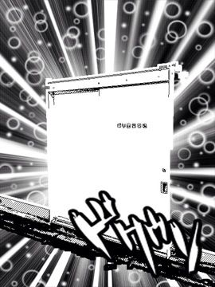
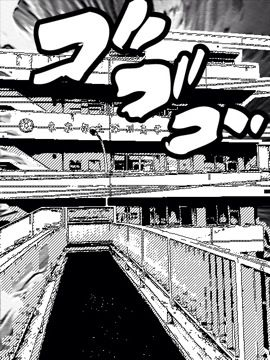
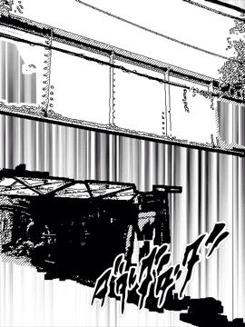

| ふかがわばすたーず | |
| ニートスズキ | |
| NEET SUZUKI (2012) | |
この物語はフィクションであり、実在の人物・団体とは一切関係ありません。
「哲子様っお願い！この通りだっ」ガバッと目の前で土下座する小柄な中年男性は私の父親。
場所は高田馬場のブルセラショップ。時間はマジで遅刻する午前八時の五秒前。
皆さんおはようございます。場所は不健全、シチュエーションはミステリアス、ただかすかに店内に入り込む朝日だけが健全。ああ、雲一つない青空が私の門出を祝ってくれているかのよう。だって今日は、高校の入学式だからっ！私は哲子。今年深川高校に入学するJKです。
昔から言いますよね。花の命は短い、恋せよ乙女と。私もこれから始まる高校生活に心をときめかせましたよ、昔は。元々、家は私が生まれた時からブルセラショップを生業としていました。物心がつくまで、別段何とも思っていませんでした。これが普通だと。父からの英才教育をそれはもう、ボクシング三兄弟みたいに施されちゃいましたから。
転機が訪れるのは、小学校に上がってから。露骨にお友達にこう言われましてね。
「お母さんに、ブルセラショップの子とは遊んじゃいけないって言われた！」
子供心をハートブレイクするにはその一言で十分でした。家に帰って私はママに泣きながら聞いたの。
「ブルセラショップの子と遊んじゃいけないって言われた」
ママはセーラー服姿で「仕方がないわね」と私の頭を撫でて慰めてくれた。
私が中学に上がると、次の転機が訪れます。うちの店は、勿論買取もやってましたが、メインは自主制作、つまりママがうちのブルセラショップ『ブルマオフ』の看板娘だった訳です。
需要があるので私も幼い時から、手伝ってましたけど。それが、私が中学生になった時に均衡が崩れてしまうのです。つまり、私の売り上げがママのそれを上回ってしまったと......。
「ママさんショーック」くらくらくらり。
人気商売ってのは、全くもって残酷なものですよ。娘に負けたママは、笑顔で娘の成長を祝福してくれたくれたものの、翌日、『探さないで ママ』と書き置きを残して失踪したのでしたー。
それ以降、今日までの約三年間は、父と娘の二人三脚で店を切り盛りしてきましたが、都知事によるブルセラ弾圧と、顧客のリストラのダブルパンチで、ブルマオフの経営は火の車、閉店寸前まで追い込まれていたのです。
そこで、父さんが私に提案したのは、
「すまんが哲子、高校で友達を百人作ってくれ。そして、制服を売ってもらうんだ、いいな？」
私だってね、ちゃんと抵抗をしたよ？
「高校デビューなのよ。やっと、同じ中学から進む人もいない。人間関係リセットできるのに。うちの商売を隠し通せるまたとないチャンスなの」
私の力説は続きます、
「初めて友達が出来るかなって思ってるのに、それが作っても、何？制服を売ってって言わなくちゃいけないなんて！あんまりだよ、父ちゃん！！」
私は泣きながらダッシュして店を飛び出した！
二日後、お腹を空かして、私が家に帰った時には、ある程度自分の中で納得済みでした。だって、私をここまで育ててくれたのはブルセラだもん。だから、決して私はブルセラを嫌いじゃない。血は争えないってやつか。
それに、いくら都立高校とはいえ、学費は必要。今日日高校くらいは卒業しておきたい。そんな訳で、とてつもない大きな溜息を連発したけど、そうして私はブルセラショップに帰ってきたのでした。店内に居た常連のお客さんに軽く愛想を振りまきつつ、そそくさと私はカウンター奥の居住スペースに戻った。
んで、冒頭のシーンに戻る訳。一度は、納得していても、素直に「行ってきます」なんてさわやかに店を出られる訳が無い。このくらいの癇癪は大目に見ていただきたい！！でも、素直に出ておけば、あんな事態には......。
私の、ゴネ様を見て危惧した父ちゃんが、私の背中になんと貼り紙をしたのですよ。これから朝ラッシュの電車に乗って通学する私の背中にですよ！？もう本当に！信じらんない！！
高田馬場から深川高校の最寄り駅である東陽町駅までは、地下鉄東西線一本。最も混雑する区間は反対（B線）なので、比較的優雅に通学が可能。これから三年間"痛"学とはならないのは、嬉しい限り。
初めての電車通学、大手町を過ぎた頃から、同じ制服の生徒も車内に目立ってくる。
「来た来たｷﾀ━━━━(ﾟ∀ﾟ)━━━━ｯ!!」と興奮を抑えきれない私。
周りも私の方を指さしたりなんかして、なんかヒソヒソ話。みんなも私と一緒で興奮してるんだね、きっと。
そうこうしているうちに電車は東陽町駅に到着する。うむ、地下鉄は外の風景を楽しめないのがちょっと残念かななんて思いつつ、そんな些細なこと、頭から吹き飛ばして、ついでに懸案である制服の仕入れのことなんかも忘れてみた。それなのにー、
「あなた、征服に興味がない？」
「えっ？」
振り返るとそこには、金髪メガネの女の人が立っていました。
それは電車から下車した瞬間、東陽町駅のプラット・ホームでの出来事。階段近くの車両から降りたので、周りから階段への人の流れが邪魔な私たちを避けて通る。ちょっぴり通行の邪魔。やがて、ホームから人が階段に吸いこまれ、次の電車がやってくるまでの刹那、金髪さんは、私に向かってこう言ったのでした。
「私に付いてきて」ポンと私の肩を叩き、先を行く。
「えっ？えっ？」
エスカレーターに後追いで乗っかると
「だって、私はこれから入学式なんですよ！」そんな無理です。
この時私は付いて行くつもりではなく、どうせ駅から出るんだし、途中まで。そう、たまたまルートが一緒だったんですから、ただそれだけなんです。
エスカレーターで上昇中、地上から風が吹き抜けて、お姉さんの金髪がふわっと。わーお。何でスローモーション再生なんすか、ヤメテよ。髪に手をやる姿に心がときめいた。あれ？
「同じ制服」
そう、お姉さんは白衣の下には私と同じ深川高校の制服を身につけた、先輩でした。
「あなた背中にこんなの付いてるよ?」
ビッと、横向かされた私の背中から何かがはがされる感覚。
「痛っ」髪の毛も一緒に数本抜けました。
「あっごめん」
「はい、これ」と手渡された紙に目をやると。
「制服買います ブルマオフ」
固まる私を、心配したお姉さんがのぞき込む。
「気分悪い？」
「えっはい。いや、大丈夫です」
混乱した頭の中で、あれ、これは終わっちゃったかなー、それともまだセーフ？とシミュレートしてみる。不思議と父ちゃんに対する殺意はこの時点では皆無で。脂汗ダラダラで固まっている私の横で、
「入学式は出ないと駄目、だよね～」う～んと、猫みたいなの口して、そこに指を当て考えるお姉さん。
何か閃いたみたい。ポムっと平手をグーでペチリとし、
「入学式を録画しておいてあげるから、それをあなた後で見れば」
これで決まりだね～的な。キャッホー。私の口から溜息がモレキタス。まぁ、ぶっちゃけどうでもいいかな、入学式。出だしから？秘密がバレちゃったし。仮にだよ？学校の廊下でお姉さんと出くわしたて「あっ制服を買いますの人だ」とか挨拶されたら、それで私の秘密は拡散する訳だし。
♢
駅から出ると、取り敢えず私はルンルンと先行く金髪のお姉さんの後ろを、口止めする手管を考えつつ、トボトボ付いて行きました。
「あっマック」
どうやら最初から通学路とは外れております。
「ねぇ、あなたお腹が空いてる？朝食は食べてきた?」
お姉さんはそういって振り向くと。胸に手を当て、私に自己紹介してくれた。
「私は園子」ニコニコ返事を待っている。
「哲子です」
「哲子ちゃんか～、哲子ちゃんね～」と口に馴染ませるように繰り返す。
何故かごきげん。理由は不明。
そんな園子さんの後を私は、別にマックに寄るわけじゃないのねと思いつつトボトボついて行った。
私にも変化があったかな。視野がわずかに上昇したかもしれないな。名前覚えるの苦手な私。メモした方が良いかな、とかとか考えながら、トボトボ歩く。角を数回曲がり、車に注意して、横断歩道の無い場所を横断すると。
「着いたよーここ」と。園子さんが、私に向かって宣言したのでした。
「ここが」私は、ここがどんな場所か理解しないまま、取り敢えず扉の文字を音読してみた。

「ポリ容器置き場」
「ポリ容器置き場へようこそ～哲子ちゃん」
「歓迎するわ」と言いながら、ドアを開けて私を内部へ入れようとする。
中は、どうやらこの建物のゴミ捨て場の様ですが......。
この時の私には、全力ダッシュして逃げるという選択も十分可能でした。
ただ、なまじ実家がすこぶる怪しい為に、私は怪しさセンサーが麻痺しているきらいがあり、私はなんと素直に園子さんの後に続いて扉の中に入ったのです。
後ろで戸が閉まる。ガシャーン。
中は、ゴミの甘ったるいスメルが充満している。思わず、手で鼻をつまむ。
「ほほにへいふふは？」
「無いよ、ちょっと我慢してね、征服があるのはここの先」
奥？
園子さんが、カードキーをのっぺらぼうのスイッチみたいな所にかざし、二言三言合い言葉を述べると、まるで宇宙船のような開き方で、壁が割れて行くではないすか！穴の向こうはスモークと光が満ちあふれ、スモークが今開いた壁穴から床伝いにあふれ出している。
「我々のアジト、ポリ容器置き場へようこそ！哲子」
♢
地下に続く謎の階段、ドアの開き方から、私は、まるで台風が来た様な高揚感を感じていた。園子さんに続き、スモーク漂う足元に気をつけながら階段を下りていく。その先に何が待ち構えているとしても、ゴミ置き場に留まるよりはマシじゃない！
私が、カーブしながら下っていく階段を、手すりに掴まりながら慎重に降りだすと、後ろでは静かにSFじみたドアが閉じた様だ。階段は薄暗かったが、元々ゴミ捨て場が、コンクリート打ちっ放し、蛍光灯に換気扇だった所為もあり、目は割と順応していた。
階段を下りきると、そこには一般的なスチールの扉と、玄関マットが敷いてある。
園子さんがドアノブに手をかけてドアを引き開けると、ファミマの入店音が地下に響いた。
私がおそるおそる中に入ると、そこには地下ながら、快適そうな居住空間が拡がっていた。
コンビニのように明るい照明に空気清浄機が二台、床はフローリング張りで、白い清潔感の感じられるカウンター席が目に飛び込んでくる。
カウンターの向こうには、にこやかに微笑むピンク髪にひまわりの髪飾りを付けた少女が一人。私が軽く会釈すると、にこやかに手を振り返してくれた。
園子さんが入り口を左に折れたので、そちらに視線を移す。観葉植物の影にもう一人、椅子に腰掛けノートパソコンを開いた、おかっぱ頭の女の人が居た。そして私を見つけるなり、
「ちょっと園子。あんたまた...」
ややバツの悪そうな園子先輩。
そのおかっぱは、「はぁ」やや大げさに溜息を洩らすと再度私に視線を向けた。
私は、また軽く会釈を。だが、ノーリアクションで、パソコンの画面に視線を向けるた。す、スルーされた。
取り敢えず。そこに掛けててと、カウンター席の椅子を指示され、私はそこに腰掛けた。
「お茶か珈琲どっちにする？」
頭に向日葵を咲かせたピンクのロングヘア、褐色の肌に白ビキニという、一回りしてしてこの地下空間に相応しいのかも知れないと思ってしまう、南国少女は私にそう聞いてきた。
「お茶ください」
どっちにしても、味わって飲めるわきゃないし。奥では何やら揉め事の気配です。
「あの子は違うんだ」
「はぁ、どこが？」
「征服が得意なんだよなっ哲子ちゃん？」と唐突に話を振られた。
「ええ、制服には一応詳しいですが？」と作り笑いして即答すると。
「あらっ」とその一言で、それなら話は違うと納得してる、おかっぱさん。
トロピーな彼女がにこやかに私にお茶を差し出してくれた。ジャワティーかな？
ホッと一息ついた園子さんは、眼鏡を取って、それをハンカチで拭くと、
「イクルミちゃん、私にもお茶な」
「はいなー」こぽこぽこぽ。
「取り敢えずこれで落ち着いて話せそう」と私に笑いかける。
少しするとトロピカルなイクルミちゃんがお茶受けも用意してくれた。
「征服に詳しければ、問題がないのはー」園子さんが、ストレートティーで喉を潤してからやおら演説口調で話しだした。
「ここが征服をする所だからです」
おかっぱさんとイクルミちゃんもウンウンとは頷いている。けど私はなにがなにやらーである。
制服するってなんだろ。
「あ、コスプレですか？」
「あーそうじゃなくてね」
「我々はテロリストなのよね」
はっ？テロリストなの？YOU達は。
指さしてそう確認する私に、トロピーな彼女は優しくうなずいた。
正直、私は軽く涙していたよ。「あはは」今日は厄日だ。
「で、私をどうするつもりですか？家は貧乏ですけど」
「身代金なんて取らないわよ」おかっぱのテロリストが言った。
「だってうちお金持ちだもん」
園子さんとイクルミちゃんがおかっぱのお金持ちさんの肩と腕をそれぞれマッサージしている。
「あのう、あなたは？」
「あぁ、私はみかか。そっちのピンク髪の子がイクルミ」
「ど、どうも。哲子です」
部屋を見回すと、コンクリート打ち付けの部屋で窓こそ無いものの、ナノイーやプラズマディスプレイなど、そこはかとなくお金のにおいが。少なくとも、うちよりは全然リッチ！
「まぁ、なら何です？何を征服？日本を？」
「惜しいっ我々は東陽町を深川から解放しようとしてるの」とみかかさんが説明った。
ここから、園子さんの演説が始まる。
「東陽町は深川に征服されている」終了。えっもう終わり！？
「っていうか、ここって深川なの？深川って門前仲町とかなんじゃ」と高校から東陽町デビューの私は率直な質問をおせんべいをかじりながらしてしまった。
どよめきがわき起こる。マジか！？三人が冷静さを取り戻し、再開する。
「これを見て欲しい」みかかさんの提案である、地図を見る。
「深川郵便局に深川車両基地、深川高校。あ！この銀行は深川支店ですね」
「そう、深川に占領されている事が解っていただけかしら？」
そこで紅茶を優雅に飲んだみかかは「おーほっほっほ」と勝ち誇って笑った。
その高笑いに、何故か協調して笑うイクルミちゃん。
「それが我々の活動目標ね、あなた手伝いなさい！哲子」と私をここに連れてきた張本人である園子さんが言う。
「何で私が？」私がそう言い捨てたのも至極真っ当であろう。こんなヤバそうな事に、足を突っ込まないといけないのかと。
あ、ヤバ。聞いちゃった、計画...。
あぁ、私はもう生きては帰れずに、コンクリ詰めにされ、東京湾に沈められる運命なんだろうか。お父ちゃん先立つ不幸をお許し下さい。等とオヤジの顔が思い浮かんだ刹那、朝の仕打ちが怒りとなって私を急襲した、全身駆け巡ったのだ。
「まぁ、一応仮入部？ってことで」父親への怒りを引き金とし、私がそう言うと。
「おおっ」どよめきが沸き起こる。
まだ朝の九時過ぎのはず、朝からする話じゃないと思うものの、この部屋は地下だから窓がないし。いや、ゴミ捨て場の奥の地下か。核シェルターにでもなってんのかなぁ？
「じゃぁ、固めの杯にあれを出すわ」と園子さんが。
何故か他の二人から笑顔が消えて、どんよ～りしている。
「あれ？」
「約束の朝食よ～。腕によりをかけちゃうんだから」
「それってこのおかしじゃないんですか？」もう一枚つまんで聞いてみる。
「それよりもっといいもの（はぁと）」と悪戯な微笑みを湛えながら、園子さんは奥に消えて行った。
園子さんにもさっき会ったばかりの私だが、更に今初遭遇な二人と残されてしまった、どうしよう。園子さんが見ていない所で、何されるか解らないのである。再び緊張が走る。
ところが二人とも、私など殆ど眼中になく、各々、バケツだの、舌の味を感じない部位の確認に余念のない様子。よく解らないが、私はそれをぼんやり眺めつつひたすら園子さんの戻ってくるのを待つのだった。
♢
「お待たせゴメン」と戻ってきた園子さんの手にはお盆、その上に謎の料理が乗っていた。
「何故割烹着？」
「えへへ、似合うでしょ～」
「ええ、確かに似合ってますけど」
私の目の前に出された料理は何？悩む必要もなく説明がなされたのでそれを引用してお伝えすると、この料理はどうも「東陽ライス」という名前らしい。
まず、見た目白いのがヨーグルト。スプーンでかっぽじると中にはあさりあさりあさり！
そして申し訳程度に白米が振りかけられている。
「私思ったのよ、深川めしがあるのに東陽町にそれに対抗する名物が無いと、東陽町が独立に成功した時困るじゃない！！」
「深川めしをそのまま東陽ライスに名前だけ換えて済ます事も出来るけどそれじゃぁあまりに芸が無いでしょ」
「あさりが深川めしの売りなら、いっそのことあさりとご飯の割合を思いっきり逆転させる発想の転換が凄い！」
これはライスと言うよりあさり。
うわぁ、向かいの面々が、あぁ、また犠牲者が増えたというような気の毒そうな眼でこっち見てる。
少しは同情してくれているのだろうか。二人とも、勿論その東陽ライスとやらに手を付けてない。
ジーッと園子さんが私を見てるし、前の二人もそれに便乗する形で私を見ている。これは、どうやら私が最初の犠牲者らしい。逃げ道はないのか？選択肢出ろ出ろ！
「あれぇ、哲子はあさり嫌い？」
選択肢はまだなの～～。軽く頭を抱える私。
好きとか嫌いとか言うレベルではないのですよ......。物には限度という物があるんです！
「あさりは、別に嫌いじゃないんですけど。特別に好きという訳でも」
そう言いながら弱含みで笑ってみせる私は立派でしょ？
あうう。
一縷の望みではあるが、食べず嫌いの可能性もあるなと、自分を鼓舞する。空腹とかその辺の助けも借り、私は一口ぱくりと口に運んでみた。
「どう？お・い・し・い」
無言でコクコク頷いて、お茶で流し込んだ。え？まだなの？もう一口っすか?
味わってレビューらないと駄目なのだろうか？どこまで拷問は続くの？神様あんまりです！
えい、やっとう。パクリ。もふもふもふ、じわり。涙があふれた。
「ええ、とってもドリーミーワンダーでエクセレントなお味ぃ」
笑顔で泣きながらそう述べる私。
「でしょでしょ♪」
「しいて言えばあさりっぽいというか」
「うんうん」
「あさり」そこで私の記憶は途切れる。限界だって。
これは後から聞いたのだが、イクルミちゃんは東陽ライスが食べられるらしい。バクバク食べたらしいよ。これが蓼食う虫も好き好きってやつだろうか？ぶっちゃけ、あり得ません。
どうやら、これで私も"晴れて"秘密結社の仲間入り果たせたみたい。あれだけのものを食べたのだから、そのくらい当然という気がする。
♢
「これ」と、みかかさんが、ガジェットを私に支給した。
「ケータイ？？」私もケータイくらい持っているのに、どうして？
「我々の活動に必須なものだから常に携帯なさい」そういう事らしい。
スパイ道具?その多機能ケータイとやらを手にとってその二つ折りを開こうとすると、
「危ないっ」とイクルミちゃんに凄い剣幕で止められた。えっ？爆発でもするの？組織が組織だけにおっかなびっくりですよ。イクルミちゃんは私の隣にやって来て、人差し指を立てて、チッチッチと言っては、
「爆発はしないけどねっ」とボタンを押してケータイをパカッと開いてドヤ顔。ワンプッシュオープンは『P』の伝統であったらしい。っていうか、これってパナソニック製なの？
ポリ容器置き場は、マンションの横の路地に面していて、一応正面は街の電器屋さんパナソニックのお店！AV東陽になっているのさっ。ちなみにAVをアダルト・ビデオの略称だと勘違いする人が後を絶たず、改称を常日頃から検討しているらしい。
その入学式の日から私は、家に帰っても店手伝わされるだけだし、学校が終わると、ほど近いアジトに詰めるのが日課になった。私としては課外部活動みたいな軽い感じでね、参加してたって訳。
「こういうのも友だちって言えるのかなぁ」なんてニタニタしながらポリ容器置き場に通っていた。
♢
「まずあんたにはっ！聞いてる哲子？このケータイの使い方を習熟して貰う必要があるからねっ」先輩の園子さんが熱弁をふるう。今後は園子さんの事を先輩と呼称しますね。
「習熟も何も、ケータイくらい。いくらうちが貧乏でも私も持ってますよ、ホラ」
私がケータイを提示しようとすると
「甘い！これはただのケータイじゃないんだからね！」
「何度言ったら解るの、このあんぽんたん」と私にハグしてくる。ひっつかないでっ！
「解りました、教えて下さい」
「素直で宜しい！それじゃ、外に訓練しに行くよ～」
「あっ、ハイ」
「いってらっしゃい」イクルミちゃんが見送ってくれる。
「あぁっお茶飲みかけ」
私は冷めたお茶を一気飲みして
「ごちそうさま～」と言い残して、先に出た先輩を追っかけてアジトを飛び出した。
さて、私は実地訓練に出かけたのだが、その日は空振りであった。どれだけ探しても、敵に出会わなかった。こういう日もあるのだろう。
「ううむ、やっぱり夜じゃなきゃ駄目かもね。哲子は夜遅くなっても大丈夫？」
「はぁ、終電に間に合えば」
「ｵｯｹｰ!ｵｯｹｰ!」と言った感じで、その日はいったんアジトに戻ってから、近所の西友に行って食材を買ってきてアジトで自炊をした。というか、私が一人で作ったんですがね。
「カレー」リクエスト主が、イクルミちゃんなのでーそこに、他意はないと思います。
「いただきまーす」
みかかさんは出されたものは文句なく食べるタイプですね。
先輩はスプーンを口にくわえる様子が可愛い。
流石はパナソニックのお店にあるアジトです、パナホーム？パナアジトか。ここには食器洗い乾燥機も完備されてあったので、おっかなびっくりそれを使うのも新鮮でした。勿論、ドラム式の洗濯乾燥機も完備。どうやらタイムマシンではない様子。
「洗濯機の中に入るの嫌だし」先輩とみかかさんにシンクロで駄目出しされた。
「タイムマシンはこれで」ペチペチとケータイを示す先輩。
「えっ？」
「そのうち説明するけど、このケータイはタイムトラベル？時間を遡る事も出来るのよ。未来には行った時無いけど、未来にも行けるね？」
無言で頷くみかかさん。
「スゴイ科学力ですね」私はマジマジと自分の支給されたケータイを見つめた。
「うん」
「まぁね～」この時私はまだ、タイムトラベルにいかに苦しい目に合わされるかなんて想像だにしていない。だって先輩達、机の引き出しからタイムマシーンに乗りたいとか、そんなの意味が無いとかそんな冗談言いあってんだもん！
お腹がこなれると、みかかさん一人をアジトに残して、私と先輩とイクルミちゃんの三人でいよいよ夜のパトロールというか、適当な敵を見つけて私にケータイの使い方を訓練しちゃおう作戦決行の運びとなったのでした。
三人で夜の東陽町を歩いていると、昼間とは打って変わり、すぐターゲットと遭遇した。
「えっあれ、なんですかあれはっ」私は驚いた。だって見た事無いもの、あんなの！
「あれを我々は雑魚と呼んでる」先輩が答えてくれる。
そいつらは、夜闇に紛れていて、はっきりとした姿を確認できないけど、頭からボロきれを被った人間のようです。ですが、足元は真っ暗だからひょっとしたら幽霊かも。
「でも、どうして見えるようになったの？今まで見た事無いですよ！あたしあんなの！？」
「説明するのはこいつらを片付けてからねっ」
先輩とイクルミちゃんは戦闘姿勢に入った。二人ともケータイを手に持って身構えている。
「哲子はそこで見ててっ」ウインクしてそう先輩が言うと、まずはイクルミちゃんが仕掛けた。
イクルミちゃんがケータイのアンテナを勢いよく引き出すと、アンテナの先端部がバスケットボール大に肥大し、それをぽわんぽわんとケータイを支点に前後運動させて、中距離から敵をビシバシと押し潰していく。本当に雑魚のようでその一撃で敵は潰されて消えて行く。
三体撃破し残りは一体。イクルミちゃんが踊りながら景気よく、うごめく敵を潰している最中、先輩は肩から提げていた黒くて大きい鞄のファスナーを開け、なにやら組み立てはじめた。
戦闘中にこんなに準備に時間かけて何やってんのかしらと、横で佇んでいる私。
「組み立て完了」
先輩が満面の笑みを見せる。そこには、古風なカメラが。
「これで敵の魂を吸う」
「これって、写るまでに時間がかかるのでは？」
「あ～その辺は改良してあるから大丈夫。見てて」
そういうと、先輩はカメラの暗幕の中に潜り込む。まるで漆黒の獅子舞のような姿になった。時を置かず、手だけ出てくる。その手にはシャッターが握られていた。
ボフッと、連射の効かないフラッシュが焚かれると、確かに写真に写る場所にいた敵が消失している。
「ほえぇ～」
前方の的に集中すれば良くなったイクルミちゃんは、程なく残りを綺麗に一掃した。
「お疲れ」
「おつかれさまです」
そう言い合いつつハイタッチを交わす、先輩とイクルミちゃん。
目の前で展開された初めて見る戦いに私は眼をパチクリさせつつ、何もしてないんだけど、ハイタッチに参加した。
♢
「どうだった？」先輩に感想を聞かれた私は。
「凄かったです、私に出来るでしょうか。私意外と運動神経悪いし、さっきのカメラとか組み立てるの大変そう」
率直にそう述べると。
「イクルミちゃんがやっていたのは私も出来ないから。あれは彼女の特殊技能」イクルミちゃんVサイン。
「それじゃ、私は先輩みたいにカメラマンになるの？」
「そういうことになるな。でも、安心して。これ使えばいいんだから」
そういって、ケータイ端末を指し示す。
「支給されたケータイ？」
「そう、カメラ付きケータイ」
「これで良いんだぁ、でも、じゃぁなんで先輩はそのカメラを使ったの？」
「あ～あれは趣味だ」
「博士はいつも新人が入ってくるとそれ使うよね」
二人で笑っている。私も釣られて笑いつつ、ケータイを握りしめる。私は、胸の高鳴りを感じていた。あぁ、早く私も試してみたいってね。
「どうするの？」アジトからモニターしていたみかかさんからの通信です。
「そうね、今のじゃ腹ごなしにもならないし、次探してそれで今日は帰るって事で」
「気を抜きなさんな」
「了解」通信終了すると、私たちは、次の獲物を探しその場を後にした。
敵を押しつぶした場所を通り抜けたけど、それっぽい痕跡は何も残ってなかった。戦闘も時間にして二三分くらいじゃなかったかしら。
歩きながら先輩が言った。
「さっきも言ったけど哲子は私がさっきしたみたいに敵を写真に撮って退治する」
「ただ敵を写真に撮ればいいんですか？」
「そう」それ位なら私にも出来そうだ。
「さっきの奴らはなんなんですか？それと、イクルミちゃんがやっていたのは」
「奴らはフカガワの放った刺客よ、東陽町の独立を目指すうちらを始末するために蠢いてるのサ」
「博士」とイクルミちゃんが先輩に声をかける。
敵と遭遇したようだ。さっきと同じ『雑魚』だ。
今回もイクルミちゃんが凶悪バスケットボールボンボンで突撃していったが、ちゃんと私用に一匹獲物を残すことを忘れていなかった。
「パシャリ」私はケータイでそいつを写真に撮って"倒した"
「経験値とか」
「戦闘終了！哲子の経験値は１あがった」
「うえぇ、たった１ですか」
「おつかれさん」
帰り道。歩きながら、私は質問を続けた。だって聞きたい事がいっぱから。
「奴らの攻撃方法って何ですか？」
「何だっけなぁ」まさか、今考えてるんじゃないでしょうね。
「だって、攻撃されたこと無いもの」イクルミちゃんが先輩の変わりに答えてくれた。
「ぺちょって、ひっついてきてチョ〜〜気持ち悪いの」
「イクルミ露出多い格好だもんな」
「それは嫌ですね」納得。
「で、写真に撮ったこいつらはどうするんですか？」
「アジトに戻ったらーP2Pで流す」
非常に今風で安易な方法だなぁと思ったのは秘密、だって私は下っ端ですので。
その様にして、私たちはアジトに戻り、雑談をしながら後片付けをし、私はまだ終電には余裕がありましたけど、その日はお先に失礼し、電車で帰宅の途についたのでした。
学校が終わると私は寄り道せずまっすぐに、アジト・ポリ容器置き場へと向かう。
「失礼します。あっ」
珍しいことにその日アジトにはみかかさんしか居なかった。アジトの付属品のようであり、学校に通っているとも思えない（ニート?）イクルミちゃんが、給湯室にもトイレにもポリベールの中にも見当たらないのだ。そして、先輩もまだ来ていない。
このアジトには必然的に私とみかかさんしか居ないと言うことにー。
「二人きりだね」
背筋がゾクッとするようなことをみかかさんがおっしゃる。私はこの人と二人きりになる事はそういえば今回が初めてで、なんとなく気まずいかな。元々人間関係全般苦手なんですけどね、私。
「お茶を煎れますねぇ」
私が雑事に逃れたのを誰が責められましょう。
みかかさんの机には、既にカップが置いてあった。自分で淹れたのかな。
「ちょっといいかしら」みかかさんの声。
「はい？」
「良い機会だからあなたに忠告しておきたいの」
薄暗いアジトの中で、みかかさんが不敵な笑みを浮かべ手招きしている。これはもう、覚悟を決めて行くしかない。
「お話って、何ですか？」恐る恐る私がそう聞くと。
「あなた、死ぬわね」
「えっ」固まる私。プチ・フリーズする私。
と、取り敢えず
「そりゃー、いずれはー天寿を全うして？」
「言い方が悪かった、あなた殺されるよ、園子に」
「ええっ！？私が先輩に！？」ガーーン。
♢
「あいつは昔から気に入った女の子をここに連れてきては、まぁ、大抵の子はすぐに逃げ出すんだけど、そうじゃないと、あいつに殺されるて、ジ・エンド。」
私の煎れたお茶を飲みつつそう言うみかかさん。
「まさかぁ」
「本当よ。現にイクルミは園子に殺された」
「えと、イクルミちゃんは生きているのでは」
「あれはイクルミに似せたものよ、私のイクルミを返してっ」
急に声を荒らげそう言うと、みかかさんは一転押し黙ってしまった。そんな、先輩が！？
そんな時、図ったようなタイミングで先輩容疑者がいつも通りの登場。
なんか無表情で
「うぇ～っす」
ひょっとして寝起きなのだろうか、寝癖が酷い。あぁ、ブラシでとかしたい...けど！？
「アイスコーヒー」
無言。私は逃げ込むように給湯室へと駆け込んだ。変には思われてないだろう。みかかさんも先輩が来たので、話をこれ以上続けるつもりもないらしい、通常業務に戻っていた。
「あれ？イクルミちゃん居ないの？」
「どこに行ったのかしらね」みかかさんが返答。
「本当に知らない？」
「それはこっちの台詞」等と相変わらず仲の宜しくないことで。
取り敢えずアイスコーヒーをなんとか給仕する私。
「さんきゅ」と先輩は受け取るとそれを一気に飲み下した。
私は、コップを下げようか考えたけど、先輩が氷を口に含みだしたので、お盆を机の上に置き、私も椅子に腰掛けた。
「いや、場所は解るじゃん、端末で調べれる」先輩が続けて言う。
私の端末でも、隊員の居場所は調べることが出来る。プライベートもへったくれもありはしない。
「何をしているのかも、電話して聞けば解るわよ」
「じゃぁ、すればいいじゃない」その通りなのだが。
「あれれ？何か怒ってますぅ？」
「別に怒ってないわ」
「...そう。哲子ちゃん、んじゃ行きましょうか」
「あっはい。でも、グラスを」
「平気平気、誰かやっといてくれるって」
もう、ドアに向かって歩を進めている。やっといてくれるかなぁ。帰って来たら、氷の溶けたグラスが見事そのまんまになってましたけどねー。
♢
アジトを出た私は、走って先輩に追い付くと、思い切って聞いてみることにした。
「先輩は」
「なに？」
「イクルミちゃんをコロシタ？」
ジッと先輩の顔を見上げ答えを待つ、私先輩を信じていますから。
「みかかが言ってた？」
「はい」
どうして即否定してくれないのだろう。
「改造しちゃった」苦笑いして、頭をかきながら、先輩は言った。
「ええええーっ」
「ちょww改造って何ですか、それって殺してから？なんで改造なんかしたんですか？私も...改造されちゃうの？」涙目。そう畳み掛けると。
「うーんと、ケースバイケース」とトンデモナイ事を仰るじゃないですか〜。
思わず先輩からズササーッと離れる私。
みかかさんの言っていたことは本当だったんだ。どうしてですか？先輩そんな酷い人だったなんて。ひ～～ん。
「ごめんネ」先輩はそう言って私に謝ります。
「哲子、私の事、怖いよね？嫌いになった？」
胸がチクリと痛む。でも、否定の声がノドから出てきません。
「そりゃ、怖いよね、哲子におっぱいビームとか付けたら嫌だよね？」
「もう、一緒にパトロール出来ないか。ごめんー。」
途端、先輩は駆け出し、私の前から姿を消していた。私は、先輩を追いかける勇気も、足止めするおっぱいビームも持たない無力な存在だと自覚した。
♢
一人でアジトに帰る。
「ただいま」
みかかさんが私がすぐに一人で戻ってきたことに気付くと、
「私の言った通りだったでしょ？」と得意げにそう言った。
私は、無言で頷く。
「危ない所だったなぁ」この人はいったい、何が嬉しいのだろう。
「なんで、なんで先輩は、イクルミちゃんを改造したんだろう。きっと何か理由が」
みかかさんは顔を振る。
「己の改造欲を満たすためよ」
「でも、どうしてみかかさんはそんな先輩と一緒に居られるの？みかかさんだって...その、改造されるかも知れない」
「それは......、私だって許せないし気を抜けない。けどね、改造されたイクルミをメンテナンス出来るのはあいつだけだから」
「......。」
その時、噂のイクルミちゃんがアジトに帰ってきた。私はおかえりよりも先にイクルミちゃんに問いかけていた。
「イクルミちゃんはロボットなの？」
そう聞くと、バレちゃったかという風にハニカみながら
「ウン」
「それでそれで、イクルミちゃんは先輩のことを恨んでないの？」
私がそう聞くと、イクルミちゃんはキョトンとして
「どうしてー？」
「いや、だって改造されちゃった訳でしょ？」
「強引に？」
「そう」
イクルミちゃんは、みかかを一瞥し、こう言った。
「たしかにー確かにね、私が目を覚ましたら改造手術は終了しててね、私は改造人間になっちゃってたの」
「でもー？」
「ウン。でも、それは私が改造手術を受けないと助からないほど大怪我を負っていたからだよ」
「！？」
「私が哲子ちゃんみたいに新入りだった頃、やっぱり園子博士とパトロールに出かけたの」
「そうしたら、私ドジッちゃった」テヘペロするイクルミちゃん。
「敵の攻撃で瀕死の重傷」言うとみかかさんは椅子を回転させてそっぽを向いた。
「どうしよう、私先輩に謝らなくっちゃ」
「そのうち帰ってくるわよ」背中を向けたまま、みかかさんはそう呟いた。
「探してきます！」私は隠れ家を飛び出した。
「みかかちゃん、ひどぉいよ～」
「酷くない。いいか、イクルミ！お前が改造されたのは事実なんだ。そして、傷を負ったのは、園子の監督不行届！」
ブ～～と頬を膨らませ、イクルミは抗議した。
「みかかちゃんの、わからずや！！」
♢
先輩に謝らなきゃ。私はアジトを飛び出すと、ケータイで先輩の居場所を調べた。団員の居場所はどんな時でも一目瞭然である、こんな時には非常にありがたい。先輩の反応はすぐ近くにあった。
「マックか」
私は駅前のマックに向かって猛然とダッシュした。
店の前で、中の様子をうかがいながら息を整える。早とちりした私を先輩は許してくれるだろうか。謝るべきか、勘違いだったと認識を改めた事を伝えるだけでよいのか。
「ううん、謝ろう」拳をぎゅっと強く握り、行動指針を決定。
私は、カウンター前の混み具合を見計らって自動ドアから店内に。
「いらっしゃいませこんばんは～♪」先輩のスマイルが私を迎える。
しかし、このスマイルは職業的に0円で振りまいているものだ。例えカーネル・サンダースがやって来ても笑顔で迎えるだろう。
「あのぅ、先輩。私...」謝るって決めてたのに、言い出せない。
「お客様店内お召し上がりですか?」
ガーン。
形通りの接客に絶望した！
もしかして先輩劇怒ってます？私のこと知らない人扱いですか？？
「お持ち帰りで」間違った敬語の使い方だけど、マックの場合これで定着してるから、変じゃない。
違う、そうじゃない。
「おねーさんをお持ち帰りで！」ズバーン
一瞬先輩のスマイルが曇った。でも、流石すぐにスマイルを取り戻す。
「ご一緒にポテトはいかがですかぁ?」
「先輩解ってくれたんですね」私が感動していると
「解らない」と冷たく言い放たれた。その場に崩れ落ちる私。
「今バイト中だから、ちょっと待ってて」
私は髭の濃い店長に、くるールームへと促され、そこで先輩のバイトが終わるのを待たせてもらった。
♢
先輩を待つ間、私は先輩との日々を思い返していた。ケータイでの戦い方を覚えるような研修期間の日々だった。暇な時は、アジトでノートと教科書を拡げて学校の授業の予習をしてみたり、これが家だと全然する気にならないのに、不思議なものです。
「で、今日の研修は。あれ？どこまで教えてたっけ」
先輩が不思議な踊りを踊りながら私に尋ねた。馬鹿にされている訳ではない、と思う。
「もう一通りは教わったのではないかと」私が、ここポリ容器置き場の一員になって早いもので、三ヶ月が経過しようとしていた。ゴールデンウィーク惚けとかも乗り越えて今の私が居るのだ。
「そうだねー、ゴールデンウィーク開けとかに来なくなっちゃう人も居るんだよ、いこいこ」言いながら、先輩は腕で私の方を抱き寄せて頬ずりしてくる。
「眼鏡！眼鏡が」当たって痛い。
「眼鏡は顔の一部です」意味解らないことを言って、ぷーっと膨れる先輩なのであった。
「ほいじゃぁ、今日のメニューは、駐車違反を取り締まりつつマックでバイトしちゃう」
うわぁ。これって本当に侵略活動と関係あんのかな。
「腹が減っては戦は出来ず！」
結局、ジグザグに町内を回るも、駐禁車両は一台も見当たらず、駅前のマクドナルド東陽町駅前店に到着した。
「ここはね、店名が東陽町だから偉いんだ」エッヘンと反り返る先輩。
「普通じゃないの」
「甘い！隣の銀行をご覧なさい。東陽町駅前にあるのに何故か深川木場支店」
「えぇっなんでぇ」
「泣けてくるよ～」
そんなやりとりを道の往来で何故行っているかというと。そう、我々はマクドナルドの超臨時雇いのバイトなので、店が混んで、人手が足りなくならないとバイトのお呼びがかからないシステムなのです。店内でなんか食べるとお金が減るので、表でキャンセル待ちというか、求人が発生するのを待っている所なの。でも、もうすぐ夕方ピークなんで、多分大丈夫。無駄足と言うことはありますまい。
「そういえば先輩、私校則でバイトNGなんですけど」
「大丈夫、私もよ」
「何が大丈夫なんですか？」
「バレやしないって」
「そんな無策な」
「じゃぁ、私の眼鏡を貸してあげましょうね」
あっさりと貸し出される"顔の一部"。
「わぁっ、それなら変装になりますかね」
「うん、私も変装になってこりゃ一石二鳥」ポンと手を打つ。
その日のバイトは、手元ががよく見えなくてミスを連発した二人は、店長にこっぴどく叱られた上にバイト代も出なかったのでした。
♢
そうして、少し前の出来事を懐かしく思い出して待っていた私の前に程なくバイトを終えた先輩が現れた。無言で向かいのパイプイスに腰をかける。
「改造されに来たのかな？」とシガレットチョコをくくわえ、私にフーッと息を吹きかける。うつむいて、先輩の顔を見れない私の前髪が揺れる。
「ゴメンナサイ先輩。私」
「先輩がイクルミちゃんを改造したのは、イクルミちゃんを助けるためで、だから先輩はいい人です！」
「いや、初陣のイクルミちゃんを守りきれなかった。やっぱり私が殺したも同然だよ」
「でも、私は先輩が改造したくて、それで、ノーマルのイクルミちゃんを改造したのかと思って」
「いや、それもねぇ。とにかく、私はお前がやられたら、改造してしまうかも知れないよ」
「それって、助けてくれるって事ですよね」
「そうなるのかな」
なんだ、全然問題なし。
「でも、そんな理由だったら、どうしてみかかさんは？私が勘違いするような言い方をしたのかなぁ」私がそう首をかしげると。
「そうだなぁ」シガレットチョコを剥いて食べながら
「イクルミちゃんはみかかにとってそれだけ大切な存在って事だよ」そう先輩は言った。
んで、まぁ、とぼとぼと？膨れたお腹をさすりつつ、近距離だからね歩いて帰ると。私が二番目のドアの所でノックをしようとしたら、先輩がなんか、キシシと笑いながら防犯カメラを押さえ目隠ししつつ、ノーノックで急に扉を開けなさった
バッと離れる二人。二人はいったい何をなさっていたんでしょうか。
「なっ、何もしてないわ」
「何もしてないよ」
ますます怪しいですよ。勿論、下っ端の私に追求できません。先輩はゲラゲラと喜んじゃって、大満足してるようだし。悪趣味だぁ。でも、先輩と仲直りが出来て良かったです。
アジトに戻ると緊急に対策会議が開かれた。
議題は勿論
「哲子、フカガワの黒幕があなたのお母さんだっていうのは間違いない？」
みかかさんがそう質問する。
「はぁ、多分。」
「多分じゃ困るのよ」みかかさん苛立っている。無理もないか。
「哲子のお母さんが、家を出ているって言うのは聞いてた」と先輩。
「でもまさかねぇ、敵の黒幕だなんて」
本当に、信じられない話だ。それは勿論私にとっても。
「世の中狭いって事ネ」イクルミちゃんはそう言うけど。
「いや、偶然じゃないかも」みかかさんが指摘する。
「まさか...。」
みんなの視線が私に集まる。
「私へのリベンジって事ですか？」そう自分で口にして愕然とする。
「あり得ない話じゃないわ」
「でも、だって。私がアジトに哲子さんを引っ張ってくる前から、黒幕は居たよな？」
「それもお母さんの想定内だったって事よ。哲子が深高に進学することも想定済みだったんでしょ」
一同黙り込む。
「まだ、そうと決まった訳じゃない」みかかさんはそう言い立ち上がると。
「哲子さん、貴方のお母さんの写真が欲しいわ。ある？」
「はい。家になら、あります」
「そう、じゃぁ、一度みんなで哲子さんの家に家庭訪問しましょうか」
「ええええ」と、心底苦虫を噛み潰したような顔で嫌がる私。
先輩もイクルミちゃんも
「うほっ行きてぇ」等とノリノリである。
「あの、うち、そのブルセラショップですよ？怪しいですよ?」
全然気にしない様子でいる皆の衆。
あぁ、好奇心が勝っちゃっているのね～、トホホー。逝けば解るさ、そこがいかに恐ろしい場所だと言うことがっ。
♢
そして、その日はやってきた。家庭訪問の日である。目的は、母の写真の取得なのだが、そんなもんは別に?私がアジトに持参すれば良いだけの話で、家庭訪問の必要性はどこにも！ないはずなのだが。
ブルマオフは、お店と言っても駅前の一等地にある訳ではなく、看板こそ出しているものの、雑居ビルの二階に位置する。
その日、父にはメンバーの来訪を告げず、しこたま憂鬱な気分で訪問を待ち受けていた私であるが、果たして本気でお店に、三人がやってきた。
今日は日曜日なのに、みんな制服姿である。事前に何も言わなくても、よく解ってらっしゃる。ちなみに、私は家着の制服を、イクルミちゃんは制服となっている？真っ白な、いつものビキニ姿。あぁ、あんたそれで地下鉄に乗ったわね？
「いらっしゃい」と愛想良く笑いつつ、流石の親父も眼をパチクリさせている。
イクルミちゃんが奥にいる私を見つけ、手を振るので、
「哲子、まさかお前の友達か？」
「まさかとか言うな〜」渋々頷く私。
「そうですか、こいつ友達が来るなんて一言も言わないんで。知っておれば準備の一つも、さぁ、こんな所ですが、入って下さい」
娘の友達に初めて会った父は、キョドっていた。泣かないでよ、お父さんキモ悪がられるから！
「哲子さんにはいつもお世話になってます」と先輩が会釈をし、
「これ、つまらないものですが」とやおらパンツを脱ぎ出す。イクルミちゃんもそれに続いた。むろんビキニを外したら、生まれたままの姿が、そこに。
「まだ、パレオがあるよ？」
それならあげるのパレオにしなさい！
みかかさんは、予想してたけど、こういう所に全く免疫が無くドン引きしている。私に贈呈した大型プラズマディスプレーが店内に設置あるのを見つけ、それに近づいたは良いけれど、それにブルセラな映像が表示されると、ズバッとそこからも飛び退くという、徹底ぶり。一体、どうして来ようとしたのか理解に苦しむ有様です。見てて楽しいけどね。（むふん）イクルミちゃんは、そのままだとモラル厳しいので、私のズボンをあげました。
親父にとってはどうでも良いかもしれないけど、私は一応彼女たちが今日来た理由を告げる。
「母さんの写真が見たいの」
親父の顔から一瞬笑顔が消えたが、すぐにスマイルを回復し、
「おうぅ。いいよ、いいよ！哲子お前場所解るか?皆さんに見て貰うといい」
「一枚貰うよ？」
「あっコピーするだけで結構ですから」と店内でうろたえていたみかかさんが言った。
そうして、みんなでレジの奥の居住スペースへと入っていったのだった。親父の手元には脱ぎたてのお土産が二つ。
私は許可も得たことだし、押し入れを開けて中に頭を突っ込むと、アルバムを発掘した。
実は、オヤジが拒否した時のことも考え、あらかじめ一枚こっそり先行入手していたのだが、アルバムは元通り奥に戻してあったのだ。
と言う訳で、再び一苦労して、取り出したアルバムをちゃぶ台の上に置くと。
「これです、どうぞ。見てて下さい」と言い、恥ずかしさに後ろ髪を引かれつつも、私はお茶とお茶菓子の準備をするのだった。
「それにしても、すげぇなこりゃ」先輩がアルバムをパラパラ見ながらそんなことを言っています。
「そんな事無いですよ、全然普通じゃないですか～」
「あなたこれ、全然普通じゃないわよ」眉をひそめながら、みかかさんが私にそうとどめを刺した。
「だってこれ」
「アルバムって言うか商品目録なんじゃないの？」
「ポラロイド写真だしね」
「っていうか、目にマジックで線が引いてある写真は、普通のアルバムに収録されていません！」
「そうですか～？」セロハンのカバーをめくってみても、ただの透明。やっぱり目線は写真にダイレクトですか、そうだったのかー。
みかかさんはお母さんの写真を数枚イクルミちゃんにスキャンさせると
「ちょっとお父さんに、お母さんの話聞けないかしら？」と私に小声で言った。
うへぇと顔に出ちゃった。すげぇ嫌ですよ。
「そんなこと頼んだらあいつ喜んじゃいますよ？」
「じゃぁ、哲子はお父さんとお母さんの昔のこと知ってる？」
うっ。痛いところを的確に突かれました。
「それは...」私が答えられないで居ると。先輩が
「お父さんすいませ～ん、ちょっとお話良いですか?」と立ち上がりオトンにそう声をかけていた。
店番をイクルミちゃんと換わり（ちゃんと務まるのだろうか）オヤジが部屋に入ってきた。
やっぱり、デレデレしちゃってるよ、すだれ頭がまぶしいったらありゃしない。私のアイコンタクトを完全に黙殺。ええい、こっちを見やがれ！オヤジは、お母さんとの馴れ初めをペラペラと語り出す。それは、私も聞いたことがない、初めて聞くような話であったのです。
♢
「ワシがお母さんと出会ったのは、大学でだった」
「ブルセラショップなのに大卒、くはっ」
先輩とみかかさんがほぼ同時にガラス戸の向こうから要らん事を言うイクルミちゃんに座布団とコップを投擲。
「スミマセン、お父さん」アハハと顔色をうかがう先輩。
「いや、いいよ。大学にも色々あってね。文学部でしかも哲学科に入ると、就職は放棄しているに等しいからね。エロマンガ家になったり、バイクの修理屋さんになった知り合いもおるよ。真っ当に就職した奴もそりゃ居るんだろうが。」
「そして、おじさまはブルセラショップを始められたんですね」
「ええ、そうです。恋に落ちた母さんとワシは、大学を出たはいいですけど、就職は決まらず、子供を抱え途方に暮れておりました。そんな時、ミス・キャンパスだった母さんに、写真のモデルをしてくれないかという話が舞い込み、ワシがこっそり撮影に使った衣装を好き者に横流ししたのが、この店の始まりなんです」
オヤジ......。一同絶句。
「で、では。ブルセラと言うよりも、最初から、哲子のお母さんで保っていたお店なんですね、ここ」
「恥ずかしながら」
「紐なんだー」イクルミ自重！天然恐るべし。
「それはお母さん、哲子に負けたら、出て行っちゃうのも仕方がないかもね」
そこで父はかぶりを振りこう言いました
「他に男が出来たんじゃ」
......。
「私、捨てられたんだ」ショック。
「バカッそうじゃないぞ。父さんとお前が母さんを捨てたんだ」
ポジティブシンキング。
「そろそろおいとましましょうか」とみかかさんが腰を上げると。
「お父さん、色々ありがとうございました」と先輩もそれに続く。
「えっ、待って下さい......よぅ。」
「バイバイ、哲子ちゃん。また明日～。それからズボンありがとうね～」イクルミちゃんまで！？そっそんな～～。
カランカラン。ブルセラショップに取り残された父と娘は、その日口をきく事がなかった。
夜の東陽町。制服に身を包んだ園子と哲子の二人が、歩道橋から学校の塀を越え二階のテラスに飛び移った。

その普通ではない跳躍力も、特製ケータイを身につけているが故の能力。何て便利なケータイ、重力制御まで出来てしまうのかと、心の中で愛でる事を忘れない哲子。
「ボーッとしない」と注意して先輩は、戸の鍵を開け職員室へと侵入しようとしている。
「先輩、我々は屋上に行くんですよね？」ベランダから上に伸びている階段の存在を指摘する哲子。
「わぁってるわよ！でもねっ、せっかくの制服なんだし？内部を通って行こう」
「はぁ、そうですか」職員室に侵入成功するやいなや、机を物色し出す先輩。
「あの～、何してんですか？」
「今日の授業の小テスト、ちょっと気になるところがあって」
「駄目ですよぉ、ズルしちゃ」公私混同甚だしいのである。
そんなことで道草を食っていると、
「誰か居るのか？」
警誰備員の巡廻だ。
職員室のドアがガラッと開けられ、
「誰だっ」と声を張り上げた。
私たちは瞬時に身を潜め、そのままの姿勢でドアに移動し、中に入ってきた警備員のオッサンと入れ違いで職員室からの脱出に成功。後はひたすら二人で走ったよ、脱兎のごとく。
「はぁ、はぁ」
「今のはヤ～ヴァかったし」
「あ～答案の訂正」
「ハイハイ」と言うことで、一路屋上を目指す我ら。
見つからないように細心の注意を払いながら階段を上ってく。
そっと、屋上の様子をうかがいながら、ドアを開けると、そこには果たして待ちかまえている人影があった。
♢
「おやおや、こんな遅い時間、学校の屋上に何してんの？」眉をひそめ、先輩が言う。
「それはこっちの台詞だ。うちの大切な高校に忍び込んでおいて盗っ人猛々しいね」
返す言葉もない。ごもっともです。
「ちょっと、泳ごうとしただけだよな～?」
「えっええ」
「制服で？って、あなた方その制服」
「なんだよ」
「うちの学校の制服じゃないじゃない」
そんな事はない、れっきとした深校の制服。ただ、旧服だけど。
「こっちの方が可愛いからいいのっ」言い放つ私。
「夜服なんだよ！」先輩が続けていう。なんすか、夜服って...
「まぁ、いいわ」深川恭子は呆れてそう言うと、バッと、手で何かを振り払うように動作して
「あんた達の考えなんかお見通しなんだからね」
「ほぅ」
「プールの水で学校を水浸しにしようなんて、そうはさせない」
「屋上にプールなんか作るから悪いんよ」と言うと先輩が恭子に向かって突進を開始した。
私は、先輩がおとりになってくれているうちにバッグからオモチャの潜水艇型の爆弾を取りだした。プールにセットする役割分担だ。
先輩はちゃんとあいつの気を引いてくれている。
「よしっ」
私が手で潜水艇を慎重にプールに入れようとした刹那、後ろから何者かにプールに突き落とされた。
とっぱーん。
セット完了。
「ぷはっ」水面から顔を出す。私を突き落とした人の姿は、暗闇ではっきりと捉えられない。
急いでプールから上がらないと！と思うやいなや、ポッポムッと変な音がした。
次の瞬間、プールの水がみるみる減り始めたのである。
「ええええ」私は焦って水から上がろうとする。
しかし、水に濡れた制服がまとわりつき、思うように動けない。そうしているうちに、ますます水の吸いこむ力が強くなる。吸いこまれる！ピンチです。それに、爆弾も爆発してしまうもん。これは死んだ～～。必死でもがくも、全くその場所から動けずに、プールから上がれない状態が続く。
「ちょっと、哲子何やってるの！？」
「先輩、一人で逃げて下さい～」
「そんな事出来ないって」
先輩は、プールサイドから私を引き上げようと手を貸してくれる。しかし、どんどん排水溝に引き寄せられる私。そしてとうとう、爆弾が爆発した。
ドッカーン。
◇5．深高から過去へ
「いててて、ここはどこ？」
哲子はズキズキ痛む頭を押さえながら周囲の様子を探る。周囲は明るく、空気もある。目に付く看板の文字も日本語。その次にうつぶせに倒れている先輩を発見。
慌てて駆け寄る。まだ、意識がないようなので、仰向けにして揺さぶってみる。
「先輩！ちょっと、起きて！」
「ん～」眼鏡を無意識に探す先輩。
「あぁ、かけてた」
そして、さっき私がしたの同様にキョロキョロしてから、眼鏡を服の裾でごしごしと拭いてかけ直し、ケータイを確認した。そしてすぐにハッと驚き、次に哲子に不吉な笑顔を見せた。
♢
「先輩これは一体」という私の問いに。
「安心して、ここは東陽町よ」先輩はそう言った。しかし、どう見ても東陽町じゃないよ、ここ。確かに、都バスも、公衆電話も十円玉も健在である。だけど！？私が導き出した結論は、そう
「今は昔？」
「正解！」先輩がパンパカパ～ンと祝福してくれる。状況が状況なので、あまり喜べない。
「それで、今は西暦何年？」
「昭和42年か44年だったと思うんだけど......。西暦に直すと何年くらいかしら」
「何で昭和で解るの？」そう私がつっこむと、ちょっと、困ったような先輩。
頭を掻きながら、
「私が来てみたいと思った時代なんで」エヘヘとか。カワイコぶっても私許しませんからっ。
「何でそんなセットとかしてるんですか！」
「いやぁ、機会があったから、いつか行きたいなぁと思ってて。でも、ほら、タイムトラベルは危険じゃない、戻れないかも知れないし？だから、セットだけ留めていたの」
「......。」嫌な予感がした。
「もしかして戻れないの？」私が恐る恐るそう聞くと、
「戻れるよ」ただし
「確実に元の時代に戻れるのは一人でーあとの一人は、戻るには戻れるけど多少のブレは覚悟しなくちゃならないわね」
「な、なんで？」
「うん、まぁね。哲子のケータイちょい見せて」私は素直に先輩に自分のケータイを差し出す。
「やっぱねぇ、哲子のケータイはまだ、タイムトラベル関連の設定が済んでいない。ってことは、今からやっても来た時にちゃんと戻れるかは、やっぱり運次第というか、ほら、人力で設定してやることになると、どうしても誤差がねぇ」
概要を把握したような気がした私は、ケータイを受け取ると取り敢えず話を中断した。あんまりにも我々が五月蠅くしていたために、目立ってしまい、周りはちょっとした人だかりになりだしていた。これはいつ警察がやって来てもおかしくない。
「取り敢えず、場所を変えるか」
「私もそれがいいと思います」
我々は周りに愛想笑いを振りまきながら、その場を後にしたのだった。
♢
我々は移動先の東陽公園のベンチに腰かけている。
「東陽公園はあるんだ」
「東陽町の名前の由来はよく解ってないけど、東陽小学校か東陽公園がその由来って説が有力」そう先輩が説明してくれた。
「あと私驚いたのがー」
「あぁ、都電だろ」
「そう」
先輩は一応知っていたみたいだれど、二人で驚きを共有した。
「あれこそ、東西線の原型みたいなもん」
「えっじゃぁ、高田馬場まで続いてるんですか？」
「線路はね、そんで朝とかは直通電車があるみたいだけど、普段は茅場町辺りまでみたいよ」
「スピード遅いから」哲子はそう言って笑った。
「あら、地下鉄も地下じゃそんなスピード出している訳じゃないのよ」
「へぇ」鉄道トーク終了。
♢
私がお腹に手を置き、ぼんやりと空なぞ見上げていると。
「お腹が空いた？」先輩に尋ねられた。
顔を赤めながら、そんなにあれかな、顔に出ていたかなと私が狼狽えると。
そーじゃなくて、ただ単に先輩も空腹を感じだしていたから、尋ねたのだとのこと。
「それと、寝る場所とかもどうするんですか？日帰りが可能なのかしら？」
着替えや洗面道具なども当然不携帯な我々二人組なのである。
「そうね、お金は小銭なら使えるかしら」先輩も苦笑。前途多難なのである。電子マネーが使える範囲が世界って感じがしてたけど。当然、電子マネーはアウト、電車にも切符を買わないと乗れません。
「けど、やっぱりホテルとか旅館に泊まるのは無理ですよね」
「まぁ、いざとなったらみかかの家に泊めて貰えるかな」
「AV東陽はあるんですか？」
「今と場所は違うけどね、確かあると思う」
「電話で確認してみる」等と恐ろしいことを言う。
先輩はケータイを操作して、どこかに電話をかけた。
えっえっ？
まぁ、普通のケータイじゃないのだ。私は今更驚いても無駄だと、既に免疫が出来てきた。
「もしもし、みかかぁ？」軽いノリで先輩が言うと、隣に居ても電話先が怒っているのが解る、先輩は受話器を耳から遠ざけた。
「それって、未来と電話が出来るんですか？」そう質問した私に先輩は、怪訝な表情。
「だってあんた、タイムトラベル出来るんだよ？このケータイ。通話だけだったら楽勝ジャン」
なるほど、そういうものかも。
「うん、お店はある、了解」先輩は指でオーケーサインを作って私に見せた。
「え？居るよ？」先輩がそう言うと、スピーカーホンに切り替わる。
「大丈夫？」みかかさんが呆れぎみに私にそう声をかけた。
「ええ、なんとか」本当になんとか。
「ちょっと待って」少し間が開き、
「悪い知らせがあるわ」みかかさんはそう言った。少し、過去観光をして、東陽町をよりよく知って現代に戻るという訳には行かなさそうだ。
「ん～面白くなってきたきた？」先輩はその知らせを聞いてこうこととした表情で、身震いしている。変態さんだ。
「何があったんですか？」私は、冷静に情報の先をみかかさんに促した。
「うん、今過去に送られたデータをチェックしてみたら、どうやらそっちに飛んだのは、あなたたち二人だけじゃないみたいだ」
えーっ。
思い出せ、哲子。過去にジャンプする直前の状況を。
あの時、深川高校の屋上プールにいたのは、私たち以外に。
「深川恭子ちゃん？」
「ええ、でも一人とは限らないから油断しないで」
「解りました」
「いったん切るな」先輩が、そう言うと。
「解った。また何かがあったら」そして、通信が終了した。
「電池の心配を？」そう質問して、私は通信終了の理由を自ずと察した。周りに子供達が、遠巻きにそのお母さん達が、ひそひそと。私たちは、また場所移動をせざるを得なくなりました。もう行くあてもないというのに。
♢
私たちは、ドブ川を眺めるような形で腰を下ろしていた。辺りはもう夕方と言ってもいい時間帯だ。お腹も本格的に空いてきた。
「川筋は、簡単に変わりませんね〜」私はお腹空いたなーと思いながら、そう言った。
「そうだな、うん、それはありがたい」
ここに来る途中、東陽商店街でみかかちゃん家を確認した後、現代では木場と東陽町の境目になっている川というか運河をぼんやりと眺めている。東西線の木場駅はこの川の下にあるのよね、末恐ろしいことに。
ところどころに現代東陽町にも残る建物を見るにつけ、時の移り変わりについて、考えさせられたり、考えたりしながら、軽く現実逃避。
「パンかなんかを商店で買って食べよう」
「寝床は」
「今の時期なら外に寝ても大丈夫だろ」最近じゃ野宿がプチ・ブームって言うけど。お風呂には入れないよねぇ。
「元の時代に帰るためには？」私は先輩に聞いてみた。
「いや、帰ろうと思えばいつでも帰れる。ただ、一人がちゃんと帰れるかどうか不安なだけ」
「それにだ。一緒にこっちの時代にやってきた深川恭子なり何なりをこの時代に、残したまま私たちが帰るとー」
ゴクリ。
「時代を奴らの良いように操作される危険がある訳ですね」先輩が頷く。
私たちが残って東陽町をこの時代から回復・開放するなんて考えは、取り敢えず捨てる。元の時代に戻りたいんだよー。
私はこれから何が起こるのか大まかに解って余裕が生まれたのか、この時代で生活する自分を少し想像してみた。私が歴史を変えようと努力しても、その影響なんて僅少で、歴史は変えれないだろうな。そう思うと、己の無力感を感じずには得ない。そして次に私は、この時代の自分の両親のことも考えてみた。この時代だと、お父さんやお母さんは何歳だろうと。ちょっと会ってみたいと思わなくもないけれど、アルバムの写真でお腹いっぱいだから。それに、だって、向こうはこっちを認知してくれないと思うし。
「そういえば、どうして先輩のケータイにはこの年に設定してあったの？」
私は、はたと思いだし、先輩に質問した。そういえばさっき、是非に来たいと思っていたとか言っていなかっただろうか。
「あーそれはね」先輩はあまり、嬉しそうな表情は見せずにこう言った。
「地下鉄東西線が、東陽町まで延伸してくるの」
そうだった、都電ーあと数年で廃止になるーがバリバリ走っている中、さりとて、東西線が出来たから切り替わりで廃止になる訳ではなく、しばらくは、地下鉄の上の道路を都電が走っているという、今から考えると誠にアクロバチックと言うか、なかなかねーよ的な状況が、首都東京に現れている時期だった。夕食として買ってきたあんぱんと牛乳を食べて英気を養いつつ。
「いや、だって東陽町に東西線が来た瞬間に立ち会いたいと思うじゃない」利用者としては。なんて先輩は言う。
「まぁ、そういうもんですかねぇ」アンパンが空腹にしみる。
「実は東陽町は、地下鉄の駅が開業する時が丁度昭和42年で、近隣の町が寄り集まって東陽町に合併したの」それか！東陽町ってやたらと広いなぁとは思ってたんですよー。
「なるほど、東西線の東陽町延伸が、東陽町の礎なんだ」そう、パンを食べながら私が言うと。
「そうなのよっ」先輩は私の手を強く握りしめ、ブンブン振る。先輩とても嬉しそう。こうして、我々の帰還は、観光と一緒に来た何者かの探索が済んでからという運びになったのでした。
その後、時差ボケみたいなものがあるんですかね。急に眠くなった、これはまずい。
「これからどこか探して泊まるとしても、もう銀行は終っているよなぁ」
どうして、銀行の後悔をここで先輩が述べているかと申しますと、今食べているパンと牛乳を買ったお金はケータイを振って出したもの、そうケータイ電話を一降りすると百円玉がポロッと出てくるので、我々はこの時代に居ても決して文無しではないんだな。
「いくら現代より物価が安いとは言ってもですよねぇ」
「あぁ、でも今みたいにビジネスホテルとか安く泊まれるところは無いかなぁ」
そう、先輩がケータイでネット検索して今我々が居る昭和四十年代の情報を収集している。未来と電話がつながるこの見た目は普通のケータイ電話だけど、実は我々のスパイ道具とでも言うべきガジェットで、なんだか、ネット接続機能も備えているみたいですよ？
「先輩それって」
「あぁ、時フリだ」時フリ、つまりロケーションフリーすなわちロケフリではなくタイムフリーって事なんだろう。
「でも、これってパナ製じゃ」つまらないことを指摘すると。
「哲子ってば結構余裕あるね」
いやぁ、それほどでも。
「つまり、これは先輩が"時フリ"端末を設置してきた我々の元来た時間のネットが見られるって事ですね？」
「そうじゃね？それがアンカーとしての機能もしてる。だから、哲子のケータイじゃネット見れないでしょ？」
パカッと開いて確認をする。
「本当だ、圏外です」
「だから、この時代じゃ哲子のケータイは役立たずだな。お金も出てこなければ、元来た時代と通信することも不可能。」
「それでも、未来に帰ることは出来るの？」
一瞬先輩が困ったような表情を見せる。
「アンカーがないから、ピンポイントで戻ることは難しいけどな。端末があるだけでも御の字、私が何とかしてやるよ」
「よろしくお願いします」私は素直に先輩にお願いした。先輩は少し照れてよせやいって言いました。
「それで、今夜はどうする？」
まさか先輩勘違いしてラブホテルに行くんじゃないでしょうね。と私は十メートルあとずさると、先輩は
「何やってるの？」だって、完全な私の独り相撲です。
「一応ケータイに宿泊機能も付いてるんだけどね、電池消耗するし、充電したいくらいなのに」
このケータイ電話はアダプタ要らずで家庭用電源に直にさせます。何でみんなこういう風にならないんだろう？
「じゃぁ、みかかさんの実家に泊めてもらう？」
さっき電話したときそんな話をしていたので、私がそう聞きますと。
「確かにこの時代にも東陽電器はあるけど、みかかは勿論まだ生まれていないんだ」
なるほど、それは気まずいを通り越して、どう事情をでっち上げて泊めてもらえばいいのか想像が付かない、パスですね。
◇6．漫画ロード
「仕方がない、公園でケータイを使って休むしかないか」
そこで私はぴーんとひらめきました。
「ちょっと待ってください、私に妙案が」
先輩は心底意外な顔をして私を見つめている。それもそのはず、だって私は過去に来ることになるなんて思うことはおろか、こういう事態に陥るまでで過去に来られるなんて思いもしていなかったんですから！
「何々？ねぇ、あんた何をするつもりなの？」先輩が突然のハイテンションで私に聞いてきた。妙に楽しそうなんだな。
「いえ、ちょっと思いついたことがあるんで」
「行く宛あるの？この時代に知り合いが？いつ時計台に雷が落ちるか正確に解るっての？」先輩にそうたたみかけられると、私はどんどん自信なくなってくるんですけど。
「先輩、この辺に両国から都電で行ける森なんとかって町がないかな？」
「えっ、森下かな？」具体的な地名が出て、落ち着きを取り戻した先輩が言う。
「じゃぁ、まずそこに行きます」私も、両国の近くの森下町という目標が設定できたことで、失敗を恐れずとりあえずそこに行ってみよう、行ってみたいという意欲に駆られたんだわ。我々は木場から都電に乗り、門前仲町で月島からやってきた都電に乗り換え森下を目指した。
先輩は窓の外を興味深そうにきょろきょろ眺めては感動していたが、私は地名こそ多少なじみが無い訳ではないが、そこはいつもは地下鉄で通っている所なので、今見ている風景と自分が来た未来のそれを比べて楽しむことが出来ずに、少し残念な思いをした。もし、元の時代に戻ることが出来たら、一度自転車かバスでここを通って見比べてやるんだからと思い、私も先輩に負けないくらい、車窓を熱心に眺めていた。そうしているうちに、二十分くらいで目的の森下に到着。電車から降りると、停留所から脇の歩道へと移動。
「で、これからどうするの？」ニコニコと私に聞いてくる先輩。
「えっと」「えっと？」
「確か」「......。」
「須賀さんってお家が」
「どこに？」
「森下町に」
「住所は？電話番号は？」
「さぁ、まんが道で読んだだけなので」苦笑いしながら私がそう言うと。先輩の笑顔が怖い。握り拳なんか握らないでください。ごつんとゲンコツを覚悟して私が防御の姿勢を取ると。あれ？ゲンコツがいつまでたっても飛んでこない。
「暴力反対」私が手を挙げてそう言うと。
「殴られたい？」私は必死に首を左右にぶるぶると震わせた。
「先輩怒ってないんですね」
「まぁね～元々あんたに、期待してる人が居たとしたらどうかしてる」
「それはヒド〜イ」抗議する私を手で制し、先輩が
「だって、あんたは過去に飛ばされるなんて思ってないでしょ？」
確かに、その通りだ。
「それに、この時間は私が設定していた、つまり私の時間よ。私の好きな、私が行くんだったらこの時代っていう、マイ・フェバリットタイムな訳」
なるほど。
「あとは私がなんとかしましょう」仕方がないわねぇと、先輩がそう請け負ってくれた。
♢
「で、その漫画ロードにはあとはどんな手がかりが載ってたの？」
私は、必死に漫画ロードのそのシーンを思い出した。
「地盤が低いから大雨になると水浸しになるんです！」
「この辺一帯がそうなんだよ」
「朝に、アサリ売りがあさりお～って売り歩くの」
「じゃぁ、朝まで二人してアサリ売りを待とうか」それじゃぁ翌朝になってしまいます。
「えーっとえーっと、そこの子供が野球してるんですよ、んで、その少年に道を聞いたら」
「ねぇねぇ、君たち須賀さんって家知ってる？」先輩がそう野球少年に問いかけていた。
「それおまえんちじゃないの？」
「そうだった～」
まるで漫画のようだと私はその時思った。漫画の中に入った様な。先輩がウインクして私に合図を送ってくる。私は少年たちにこう言った。
「お姉ちゃんたちは、長岡から出てきた漫画腐女子なのよ」
「話聞いてるでしょ？」
先輩と私で作戦の合否を須賀さん家のお子さんの次の反応に探し求める。駄目かー作戦失敗かー。一瞬が永遠に感じられた。そうしてとうとう、少年がうなずいた。私たちはほっと安堵のため息を漏らし、お互いに見つめ合った。やったな。大成功ですよ。
三人で野球仲間と別れると、私らは少年の後について須賀さん宅へと向かった。
「ここか」先輩の視線の先の表札には須賀と書かれてある。
少年が引き戸を開けると、ただいまとかあちゃんお客さん～と大きな声を上げ中に駆け込んでいった、少しすると母親と一緒に玄関に戻ってくる。
「こんにちは～」先輩が引きつった笑顔を努めて自然に装いながらそう挨拶した。
「あら、手紙では男の子二人って聞いていたけど」
「今日だけ女の子なんです」ぐはっ。先輩のエルボーが私のみぞおちに突き刺さった。すると、先輩は強攻策に出た。
「お世話になります」とずかずかと須賀さんちに上がり込んだのだ。私もよたよたと脇腹を押さえながら続いて上がり込むのでした。
「ここがあなたたちに使ってもらう部屋なの」
そう言ってお母さんがふすまに手をかけた時、
「この部屋二畳なんですよね」にこやかにそう口走っていた。
刹那先輩とお母さんが凍り付き、それを見た私もすぐさま自分の失言を認識したのだった。失態を取り返し、お母さんの疑いを晴らすため私は続けて、
「ほら、さっき狭いけどって聞いたから、二畳くらいかなって」笑いながらそう言うと。
真っ青な顔のままお母さんが、
「私そんなこと言ってないわ」疑惑は晴れるどころか逆に深まったようです。
私がどうしたらいいか解らず、おろおろ感極まっていると、それまで沈黙していた先輩が口を開きました。
「お母さん、我々二人は未来から来ました。未来人なんです」サラッとにこやかにそんなことを言う。
エエーッ。終わったー。私が頭を抱え、目を回していると。
「あら、そうなの流石漫画家の卵ね。荷物を置いたら、居間に来てちょうだい」と、
うふふと笑いながら奥へと消えて行くではないか。先輩は一体全体どんな魔法を使ったのだろう。
にこやかにお母さんをやり過ごすと、そのままへには入り襖を閉じた瞬間先輩は鬼神とかした。
「この口かー」
「いひゃい、いひゃいよ」私のほっぺたを横に引っ張る先輩。お仕置きされてしまいました。
ハンカチで手を拭く先輩に私は疑問を投げかけた。
「それにしてもさっきは一体どういった魔法を使ったんですか？」
すると先輩が、
「魔法？いったい何のこと？」
「だって...。先輩いきなり未来人だなんて正体バラすし、どういうつもりなのかと思ったら、お母さんの疑惑は晴れて、行っちゃうし」
「誰も未来人だなんて真に受けないよ。冗談だと思うでしょ。突飛なことを言うことで、我々は漫画家を目指して状況してきた訳だし、本物だってお母さんは納得して去っていきました」
おーっ。思わず拍手もそれに添える。
「まぁ、なんとか乗り切ったわね。居間に行きましょう。あまり遅れると」
「怪しまれます...もごっ」言いかけて先輩に口を塞がれた。いかんいかん。
荷物を置いて居間へ向かうと、そこには家族が揃っていた、そしてテーブルの上には夕食が。
「あっ」二人で驚いていると、お母さんが
「さぁ、みんなで食べましょう」と言うので、お言葉に甘えていただきまーすと、晩ご飯をゴチになることにした。
メニューはアサリの味噌汁と納豆だ。ベーシックなメニューだし、私たちは未来から来たけど富山から来た訳ではなかったので、美味しくいただけました。
「ごちそうさまでした」食事が終わって部屋に引き上げようとすると、先輩が
「哲子先に部屋行ってて」
「えっ？」先輩は何するんだろ。
「私はお母さんの手伝いをするからね」なんて猫かぶりなんでしょう。
「私も手伝いますよ」そう言ってみると。
「台所がそんな広い訳じゃないから、今日は私がするよ」なんて頑として譲りません。
これは何か裏があるに違いないと思いましたが、私はお腹もふくれていましたし先に部屋に行って休んでいました。後で先輩に話を聞いたところ、どうやら東陽ライスの参考にアサリの調理法などを教えてもらっていたんだって。砂抜きをマスターしたとか言ってた。そう言えば前に食べた時はえらいしゃりしゃりしてた、盲腸になったらどうしてくれるんだ、一体。
その後は二人で、近所の銭湯に行き汗を流した後、もう気分は小旅行なんですけど、いいのかな。みんな私たちのこと心配して居るんじゃまいか。そんなこと思いつつ、たった二畳の狭い部屋に布団を敷いて、私たちは過去での一日目を終えた。
翌朝、アサリ売りの声で起こされた私たちは、昨日と同じアサリの味噌汁と納豆ご飯を食べた。
「続けられるとちょっと辛いものがあるわね」と先輩がこぼす。
「先輩、私朝はパンがいいんですけど」こんな不平を言えるのは、満ち足りている証拠ですけど。もしかしたら、あんパンに牛乳だけで木場公園でケータイの宿泊機能を使って一夜を明かす羽目になっていたかもしれないんですからね。
♢
食べながら、
「先輩ケータイの充電は？」そう私が先輩に聞くと
「！？すいません、コンセント借りていいですか？」先輩が家の人にお願いする。
「いいけど、何を使うの？」また、お母さんに驚かれた。
そうですよね、この時代にコンセントを借りる習慣はあまり。ええと、そのドライヤーを使おうと思って。
「何でドライヤー」
「だって、ケータイを過去の人に見せたら説明するのがまた大変だろ」と二人で内緒話。
「あとで洗面所で使わせてもらいます」そう、恐縮して言う先輩。
果てしてあとで私が、
「ぶおおおお～」と間抜けなドライヤーの声まねをする羽目に。
「ゼェゼェ、先輩まだですか？」
「もう一息がんばって！」
ケータイは超急速充電が可能。だから、少しの辛抱です。ブレーカーは平気？
パチッ。
「あっ」ブレーカーが落ちた。
電源を借りてブレーカーを落とすなんてなんて気まずい。
流石に、お母さんから
「ちょっとあなたたち、凄いドライヤーなのね」等と皮肉を言われる始末。
二人で恐縮しまくったのでした。我々はお礼を行って、須賀邸を後にした。
◇7．ドリーム・オブ・アイランド
「先輩私夢を見ました。」
「私もよ」
「夢の中で私は島にいました」私が記憶から急速に消えつつあった夢の内容を先輩に伝えると。
「同じだ」
えっ。どうやら二人で同じ島の夢を見た様ですよ。まぁ？我々は狭い二畳の部屋で寝ました。だから、同じ夢を見ても不思議じゃない！のかなぁ。
「これは、どういう事でしょう」
う～ん。二人で考えてみた。我々は過去にジャンプして来てしまっていて、一緒に飛んだとおぼしき深川恭子をどうにかしないと、未来に帰る訳にも行かない。しかし、どこにいるのか見当も付かず、明日から探しましょうと言う時に見た夢が、島の夢。
「あっ」
「どうした、哲子。夢判断に成功したのか？」
「いや、イクルミちゃんの出身地の島かなぁと」
「あぁ、エロイラス島ね。それは違うと思う。実在するかどうかも怪しいもんだ。」エロイラス島という推理は空振りに終わりました。
「私は解ってんのよ」と先輩が。
勿体振らずに教えて下さいよ～もう。
「夢の中に島が出てきた。それって、恭子が夢の島にいるって事なんじゃないかしら」ぽかーん。
私はあまりの安直さに、軽く失神してしまう。
「夢の島って、この近くにあるの」
「東陽町駅からバスが出てる」
そうやって、藁にもすがらなくてはならない現状に私は悲嘆はしたものの、駅前からバスに乗り恭子探索の為に夢のお告げに従い夢の島へと向かったのだった。
バスに乗ったり、買い物をしたりしているけど、お金はどうしているかと言えば。ケータイを軽く数回振ると、ポロッと百円玉が出てくるので、地道に繰り返し出して、その百円玉で生活してます。500円玉が出ればいいのにって?いや、まだこの時代500円玉は登場していないのよ。お札なんだな、500円札！だから、500円玉が出てきても使えないよ！
「100円で二人乗れちゃう都バス安いよね」と先輩。
「硬貨が同じだけにインフレを実感しちゃいますよ」
駅前は、地下鉄にバスに路面電車という、現代からしてみるとちょっとしたターミナル駅の様相だ。都バスは、そんなに現代と変わらない、勿論車は古いし、バリアフリーじゃないし、冷房も付いてないけど。安いから許します。あと、色が黄色かったり青かったり緑もいるのかな？白黒写真で見ることが多い、都電の色が実は黄色地に赤帯で、まるでフィリピンかタイかって感じなのには少々驚いてしまう。すぐに慣れたけど。
我々の住む時代では、色の人に与えるイメージも研究され、黄色と赤のバスやらチンチン電車はあり得ないんだけど、昔は特に問題にならなかったのであろう。黄色い都バスは、そう都電とお揃いのカラーなのだ。
バスは、永代通りを行き止まりの日曹橋まで進んで、そこを右折して明治通りを一路南へ。南砂二丁目団地も西友東陽町店も新東京郵便局も、未だ無い時代。
「本当に何もないですね～」と私が言うと。
「私、中学生の頃塾のクラスで、東陽町に住んでいる子供が多い地域塾だったんだけどー。クラスで千葉をバカにするような発言があったんだわ。」
「そうしたら、ジョン・レノンみたいな国語の教師が言ったのね。ここだって昔は千葉だったろ。みたいな事を言ったよ」
「でもね、この前ヤフーがやっていた東京の古地図を現代の地図と重ねるみたいな期間限定のコンテンツ、この辺養魚場が拡がってた。南の方に行くともう海なんだけど。江戸の果てだったんだね、ここ。
それでも、江戸は江戸。」
そうこう話ているうちに、バスは目的地の夢の島に到着した。バスを降りると、そこに高速道路の湾岸線や京葉線の新木場駅はなかった。
「ひょっとして、バリバリ埋め立て中？」ついでに、まだ公園も開園する前です。
何もなく、ゴミ収集車だけが行き来している、埋め立て地になんて深川恭子はいるのだろうか。元々、島を夢に見ただけだし？居なくても文句を言える筋合いじゃないけど。しかし、そこに恭子は居たのだった。
どうして、そんな埋め立てもまだ進行中で、地盤沈下もバリバリな夢の島ですぐに恭子を二人が発見できたかというと。デカかったから。遠くからでもよく見える～。恭子は、何故か巨大化していた。黒いジャージを着ているので、パンツは見えない。空気を読んだんでしょ、敵も敵なりにサ。
「ありゃま」
「先輩！巨大ロボを呼びましょう！今すぐ」
「この時代に巨大ロボはまだ完成してない！」
「現代にはあるのかYO！！」等と、逆に驚かされる。
「まぁ、すぐに見つかって良かった。超ラッキー」指をパチンと鳴らして、喜ぶ先輩。
巨大だからすぐに見つけられたけど、これからどうやって退治しよう。幸いあちらは、まだ我々にお気づきではない様子。
「どうして巨大化したんだろう」
「うん、それが分かれば。哲子が巨大化して戦う」
「嫌ですよ！」
シーッ。
気付かれたら、踏み潰されペタンコである。二人で取り敢えず、木陰に身を隠した。
♢
「これはもうやるしかないな」
「どーするんですか」
「話し合おう」
ええーっ。
先輩はどこからか拡声器を取り出すと、巨人である深川恭子に向けて話しかけた。
「あーあーマイクテスマイクテス、本日は晴天なり。聞こえますか？あなたですよ～恭子さ～～ん」場所が場所だけに、ご近所迷惑にならないのがこれ幸いというか。
どうやら聞こえたようで、私？と自分を指さす巨人。
「そうですよ、あんた！どうしてそんなに大きくなってんの？」
「それは」非常に低いトーンの、元の声とは全然違う地響きを伴うような声が、夢の島辺り一面に響き渡る。
これで、あの巨人の名前は、怪獣ソレハに決定だな。人語を解しますけどね、奴は。
ドシーン。
巨人ソレハこと、でっかくなっている深川恭子は、言うよりやって見せた方が早いよねと言わんばかりに、私たちを踏み潰しにかかる。逃げまどう私たち。どうやら私たちを踏みつぶすために巨大化したらしい。
私たちが木陰に隠れるので、奴はレゴブロックの木よろしく、引っこ抜いては投げ、引っこ抜いては投げしている。まだ、植えられたばかりの木を、巨人はいとも簡単に引っこ抜く。
「あぁ、未来に上野に来るコアラの為のユーカリが」先輩が目に涙を浮かべている。そうか、先輩はコアラ萌えだったのか！コアラ萌えの先輩は、ユーカリのために逃げることを止め、ソレラの前に姿を現す。
「先輩危ないですよ～」と、私が言うのを片手で制す先輩。なにやら策があるの?
ソレラも、覚悟を決めたようだね的に立ち止まる。いつでも踏みつぶせるという余裕を見せているのだ。
「あんた、服とかそれ、どうしたの？」先輩が拡声器を使って怪獣に語り出した。何この期に及んで友達みたいに話しかけてんですか！！
でも、意外や意外、心細かったのか、怪獣はちょっと待ってねと、リアクションをとった後にドスドスと立ち去り、ドスドス舞い戻ってきた。手に鞄を持って。
「お～体だけじゃなくて、服とか持ち物も巨大化したという訳か」先輩がそう言うと、コクコク頷き、次にエッヘンする怪獣ソレハ。分かり易い。別に喋ればいいのに。どうやら、さっきの自分の声とは思えない、怪獣の方向のようなボイスに、ショックを受けているご様子。
「じゃぁ、制服も持ってる？そう。着替えなよ？ジャージカッコ悪いよ？」
先輩が、そう提案すると、自分の服装を、やおら点検し始める怪獣ソレラ。そうでしょう、あの大きさだと自分の姿を一望できる姿見の鏡も存在しないでしょうから、自分がどんな格好で人様の前に姿をさらしているか確認する手段が無くて、不安だったところを、先輩の一言。見事な心理作戦です。
「そうね～、悪いけどちょっと待っててくれる～」そういう怪獣ソレハの声に、今度は先輩がコクコクする番だ。踏みつぶされるのをただ待っている、馬鹿も居ないと思うのだが。
十分後にセーラー服に着替えた怪獣ソレハが戻ってきた。隠れるもなにも、遠くに行ってもここから着替え姿は丸見えだった訳だが。勿論先輩はその辺は指摘しない、怒らせでもしたら、即ゲームオーバーだからね。
「これでいいでしょう、じゃぁ、踏み潰してあ～げ～る～」
ヤバイ、全然問題解決してないッスよ、先輩！！私が、木陰で身をすくませて動けないで居ると。
「縞々」先輩がボソッと拡声器に呟いた。
すると、ビクッと踏みつける動作が途中で止まったのだ。
「！？」
怪獣はスカートを押さえて軽く百メートルは後ずさった。
顔を真っ赤にして、
「謀ったわねぇ」半泣きである。
先輩が私にピースサイン。私は、先輩の所に駆け寄り拡声器を譲り受けると、ポケットから双眼鏡を取り出し
「そのシミは！？買取査定に好影響」等と、パンツの買取査察を始めた。
その横では、先輩がパシャパシャ怪獣ソレラのローアングルな写真を撮りまくる。我々の完全勝利でした。怪獣ソレラは急速に存在感を薄め、白くてスケスケの巨大な砂の像になったと思うと、そのまま南の方角に倒れた。それが、現在の若洲である。
我々は、百メートル先の足元部分に倒れた人影を見つけ、駆け寄った。深川恭子である。さっきまで居た怪獣ソレハと同じセーラー服姿。スカートをめくると同じ縞パンだったので、間違いはない。
意識を取り戻しそうだったので、先輩がパシャリとケータイで撮影する。これを、アジトに持ち帰りネットに流せば鬼畜姉妹は二度とお天道様の下を歩けまい。
あれ？何か忘れていないか。その後、意識を取り戻した恭子は脱兎のごとく逃げていった。
「構うこと無いわ」その通りである。写真さえ撮ってしまえば、奴の魂はケータイの中に。
「ああっ」私は思わず叫び声を上げた。
「どうした、哲子」いぶかしがる先輩。戻るアジトが無い。
「この子は、何を言ってる、の。しまったその通りだった！！」
ケータイで魂を吸ったのは良いが、それを最終処理するアジトが、この時代には存在していない。
「どうなるんですか？」私は先輩に聞いてみた。
「二日三日はケータイに魂を保留にしておけるんだけど」
「その間に処理しないと魂は」
ゴクッ。
「元の入れ物に」
辺りを見回したが、そこに恭子の姿は見当たらなかった。もう、近くに影も形もありませんでした。
こうして私たちの恭子捜索はまた振り出しへと戻った。
♢
その翌日、我々が駅前で聞き込みをしていると、突然急接近してくる車が！？みるみるこっちに近づいて来る、ぶつかる直前に身を翻して車を避けた二人は、運転している人物を確認した。
「深川恭子」
ブルルン。ブォ～～ン。
車は、行き過ぎるとUターンして、再度こちらに突っ込んでくる気配です。
「二手に分かれよう」
「ハイッ」
二手に分かれて逃げることにした訳ですが。
「え～なんでぇ」私に狙いを定めたようで、車がこっちにやってくる。まだ、障害物も歩道と車道の境目も曖昧な道路を、縦横無尽に逃げまくる私。車をかわすことは、そう難しくないのだが。車と、疲労が蓄積していく人間とでは、土台勝負にならない。私が車に轢かれるのは時間の問題と言えた。
「ふふふ、そろそろ観念したらどう？一思いに轢き殺してあ・げ・る」
キキキキッ。
「冗談じゃないわよ」コツン。あっ。線路に足を引っかけて、ゴロゴロ路面を転がる私。待ってましたと轢き殺しに来る車。もう駄目かと、走馬燈が始まる五秒前。チンチーン。プゥオーー。とその時異音を軽快に発しながら、ちんちん電車が交差点を左折して来た。
♢
その都電の運転席に先輩の姿を見つけた私は。
ギリギリまで、その線路付近にうずくまっていて、車が猛スピードでやってきて轢かれる寸前に、横に転がった。
ドカーーーン。
間一髪で私が難を逃れると、そこでは車と路面電車が正面衝突していた。電車は急に止まれない、昔の車が重く頑丈とはいえ、重量のある都電に車は適わなかった。前の方をひしゃげて、そのまま電車に押し戻されて三十メートルくらい行ったところで、停止。ガソリンに引火して、ボッカーンと酷いことになっている。
ウ～～、カンカン。遠くの方から消防車が出動した音が聞こえる。
ガラリ。
都電の出口が開くと、そこから先輩が降りてくる。
「大丈夫ですか？」
「ううむ、予想以上に効いたわ～」と、苦笑いの先輩。
丈夫な車両に乗っていた先輩がこれなんだから、恭子は、きっとただでは済まないね。
それに、絶賛爆発炎上中だし。
色々聞きたいこともあったが、これでは無理だろう。やって来た消防と警察入れ違いで、私たちはそそくさと現場を離れた。そしていよいよ、現代に戻る準備に取り掛かるのでした。
何はともあれ、
「これで元の時代に帰れますね。お土産は何がいいかな。」
お土産なんて持って帰れないかー、アハハー。と先輩に話を振った時のことです。先輩は親指の爪を囓りながらこう言いました。
「どうやって帰るのかしら」
「ちょっとそれ、どういうことですかー」私が先輩を責めたのも当然であろう。
「来る時はプールの爆発に巻き込まれてきましたけど」
先輩も百も承知でしょうが言ってみた。すると先輩は私の肩をぽんと叩き、交差点までスタスタ移動すると。
「あれを見てごらん」
と、あきらめのほほえみと共に。
「あ～。今と校舎が違う」
「そうなんだよね十数年後に建て替えるんよ、深川高校」
「そうなんだ～。」
学校に忍び込んで壁とか机に落書きしてオーパーツを作ろうとした私の試み断念。先輩はケータイを取り出すと、
「取りあえず電話で聞いてみるよ」
いつものスペシャルなケータイを使い、時代局番から入力してみかかさんに電話です。
「あ～みかか？今ね、深川恭子を処分したけど。うんうん。そう。で、これからどうやって帰ったらいいの？」
しばしの沈黙。
「え～。知らないよ。うん。あっそ。哲子を生け贄にしてその心臓を太陽の神殿に掲げるの。メモメモ。」
「却下で。」
「あ、ゴメン。その方法はなんかうるさいのが反対してるから、よすわ。うん、じゃぁ、これから戻るから、よろすく～」
ピッ。終話。
「帰り方解りましたか？」
「うん。あんたの心臓をー」
「はいはい、それは置いて。もっと昭和日本っぽい帰り方を模索しましょうよ」
そうするとあれかね。そういって先輩は、運転を再開した都電に白羽の矢をカコーンと立てたのです。
♢
「アジトがないと不便ですね」
「本当だな」ファミレスもコンビニも普及していない時代、時間を潰すのにも一苦労です。幸い東陽町もまだ、今と比べたら全然人が居ない、平成から見て少し前の豊洲みたいな状況な上に、天気が良かったので、今は横十間川親水公園になっている川が埋め立てられた空き地にフェンスを越えて侵入し、芝生を満喫している我らでした。
「で、どうやって帰るつもりなんです？」
「みかかが言うにはね、やっぱりイベントが必要なんだってー」
「生け贄は嫌ですよ」
「だよねー」ちょっと残念そう。
「やっぱり爆発ですか？」
「爆発かそれに準じた何かー」
先輩はそう言うと、途中和菓子屋で買った、大福を食べ出した。あーあ、寝転がったまま食べると粉が制服に落ちますよって。
「でも、爆発なんてまるでテロリスト」
「そうでしょ、我々はテロリストだよ、最初に言ったじゃん。」
そういうとごろんと90度角度を変えてそっぽを向く先輩。ちなみに私は体育座りしています。パンツは見えないように座っていますよ。全くどうしたものかな。私が美味しい大福と芝生と陽気によるトリプル心地よい効果で軽く現実逃避しながら途方に暮れますと。
「やっぱり都電かなぁ」青空に向かって先輩がそう言いました。
「都電で飛んで帰るんですか？」
「カエレー」
「いや、帰りたいんです」
先輩はむくりと上半身を起こすと、こう説明を始めた。
「ケータイでちんちん電車をタイムマシンにしてるの。都電ごとタイムスリップすれば、二人ともちゃんと帰れるでしょ。」
そうでした、私のケータイはタイムマシン機能の設定がされていなくて、元来た時代に戻る機能が使えないのでした。
「都電で、イベントって何をするの？」
「我々の時代にはもう都電は東陽町を走っていない。というより荒川線を除いて廃線になっているわ。」
「それじゃぁ、私たちが都電ごと戻ったら線路は無いうえ車とぶつかって大事故に。」
「大正解。」駄目じゃん。
「でも、小名木川線は我々の時代にもそのまま線路が残っていて。」
「小名木川線？」聞いた事無いですけど。
「江東区を南北に貫く貨物線よ。今では日に数本貨物列車が走ってる程度だけど。その貨物線と都電は立体交差しているから。」
「どうしよう。」
「ジャンプすれば？」
「哲ちゃん賢い。」えっへん。
「ついでにもう一つ。」まだあるのか。
「都電と貨物線では、線路の幅が違うんのよね」そんな言わなきゃ鉄ちゃん以外誰も気付かないのにこの人は。
「フリーゲージトレインにしましょう！」
「そうしましょう。」
しようと思えばなんとでもなる魔法のケータイを持ってる我々は実にお気楽なもんだ。
♢
そして、決行の夜を迎えた。我々は終電後に寝静まった都電の車庫に忍び込むと。
「居た居た、君にしよう」先輩が一台の都電に乗り込みました。
先輩が乗り込んだのは、昼間に鬼畜姉妹の車とぶつかった思い入れのある一両です。ドアの鍵にケータイのアンテナの先を近づけると、解錠されます。あぁ、なんて便利なんでしょう。私もその機能で、車庫の入り口の門を開いて待ちかまえます。先輩は運転席に座ると、ケータイをマスコンの代わりにセット。するとどうでしょう、パンタグラフをあげて通電しなくても、ケータイの電池で車両のヘッドライトが点灯しました。発車の準備完了。明かりに照らされた私は先輩に向かってうなずきます。
ガシガシッチンッ。
ブゥオォーと唸りを上げ、ちんちん電車が出庫します。
私が門の近くで動いている電車に飛び乗ると、運転席横のドアはパタリと締まりました。
「先輩」
「なんだ？」
「ドア開いてても走るんですね！」しーっ。
「じゃなくて、うまくいきましたね。」
「車両を調達するところまではなっ。」
電車は車の信号を守りつつ、東陽町駅前を通過、やがて南砂二丁目団地が建つ汽車製造工場の手前で左に曲がり、永代通りを離れて専用軌道に入ります。
「この専用軌道の途中で、貨物線の下をくぐるんだよ」先輩が楽しそうに運転しながらそう言います。ううっ私もちんちん電車走らせたいです。
「後で代わってあげるよ。」
「本当ですか！」本当。
「あー哲子はお前のケータイをストラップで適当なつり革に繋いでおいて」
「どのつり革でもいい？」おｋ。
私は、中程のつり革にケータイをストラップで括り付けました。すると、線路が少し下り坂になる、貨物線をくぐる辺りで先輩は電車を減速させ、立体交差の手前で停車させた。

「さて、ええと、どのメニューだったかな」
先輩はマスコンと化しているケータイの液晶を見てボタン操作をしながら、電車を直角に交わる線路にジャンプさせてフリーゲージさせる設定に大忙しだ。それはまるで無線LAN内蔵ではないパソコンに無線子機を取り付けて設定するぐらい大変そうな作業に私の目に映る。
♢
「先輩」
「あともう少しだからね」
「星が綺麗です」振り返らず裏拳で殴られた。でも、先輩待ちで手持ちぶさただった私が見上げた夜空は本当に素晴らしかったのです。
「おや、本当に綺麗だね。帰ったらみかかとイクルミちゃんに自慢しましょ」
先輩がへへへと鼻っ柱をこすりながら笑います。
「帰れたら」
「大丈夫だって。」そういって、私の背中をぽーんと叩くと。
「車両を浮上させて、車輪の幅を縮めるから少し離れていよう」はい。
私たちが少し線路をさかのぼった位置に移動してまもなく、ちんちん電車は、かなりのスローモーションで線路から舞い上がると上の線路に90度回転しながら着地した。それは、さながら月に帰るかぐや姫の天空牛車の様な優雅さで浮上した。
「成功成功。」先輩が、どんなもんだいとばかりにとてもうれしそうにしている。もちろん私もうれしいです。
二人で、都電の線路を外れて、貨物線に沿って上っていくと、都電も私たちの方へ徐行してきました。とっても賢いんですね。
♢
「さて、いよいよね」電車に乗り込むと、
「哲子が運転しなさい」先輩が真顔でそういう。
「えっ」確かに運転したいなぁとは思ったけど。いざ任されると。
「どうしたの？」先輩はそういうとすたすた、さっき私が自分のケータイをセットしたつり革の所に行きケータイに掴まった。
オロオロしている私に。
「早く発車しないかなぁ、この電車」はっはい、ただいま。
私はプシューとドアを閉めると。カツカツッガコッチーンと電車を発車させた。アジトに電車でGO!が置いてあったので、一応なんちゃってな電車の運転は可能。それに、マスコンがケータイだし、実は何やっても平気なんじゃ。
「先輩それで、これからどうしますか？」
「フルノッチにしなさい」私は言われたとおりに最大出力にマスコンを回した。すると、聞こえる音と車窓の風景が変貌を遂げた。
「なっなんだこれー。」
「タイムトラベルが始まったんだよ」
「これで元の時代に帰れるかーらーー」せ、先輩！？車内ミラー越しに見る先輩が遠ざかってる。というか、クルクル回って後ろに吹き飛ばされて行くじゃないですか。
「ちょっと先輩、何やってるの？一緒に帰れるんでしょ！」それなんて冗談！
「私は、哲子のケータイで帰るから、心配すんな」
「ちゃんと元の時代でピタリと止めて、元の時代に帰るんだからね」
次の瞬間、世界全体が真っ白になり、私は目を開けていられなくなった。すると今度は、音が普通の電車の走行音に戻り、目を開けると車窓も普通に夜のそれ風に見える。
カーンカーンカーン。
えっ踏切。一日三往復しか列車の通らない貨物線の踏切に突如ちんちん電車が超スピードどで通り抜け、通った後の線路然燃え上がり夜闇から二本のレールを浮かび上がらせる。
「ブッブレーキ」
私は制動をかけて車両を止める。踏切の先は、線路がカーブしているのだが、そんな操作にもかかわらず、ちんちん電車は横転することなく停車した。
「ふぃ～」手で額の汗をぬぐうと、私は車内に先輩の姿を探す。だが、一両だけの車内をいくら探しても、先輩の姿はそこにない。私が虚脱していると、踏切の方からやじうまがやってきて、なにやらわめいている。
そして、サイレンが鳴り響き、警察と消防がやってきた。また警察沙汰。もうどうでもいいやって感じで、特に何もしないで放心していると、レスキュー隊がドアを破り、中の私を確保し有無を言わさず救急車に乗せて病院に搬送した。
私は元の時代に戻る事が出来たんだろうか。
ケータイの日付を確認する、あっケータイじゃ駄目か。新聞かテレビを探すが、近くに見あたらない。そこでまた、深い眠りに落ちた。
♢
目を覚ますと、窓の外が明るい、あれから何日か経ってるのかなぁ、これも時差ぼけというのか私の三半規管は一日の長さを正確にまだ認識できずにいた。
「先輩。」
先輩は最初から、元の時代に確実に戻れるのは一人だけと言っていた。それなのに私は、電車に乗れば二人で帰れるものとばかり......。多分、絶対に先輩は最初から私を元の時代に戻してくれる気だったんだ。私だけじゃ素直に私が帰らないって解ってたから先輩は、あんなイベントにパッケージングして。
「先輩が居ない時代に、私だけ戻ってきたって。そんなの意味無いのに」
私は、わーわー泣きながら、先輩のケータイから先輩のブログを確認していた。そして、ブログを見て驚きました。何故ならブログが更新されていたからだ。
○月×日 深川江戸資料館に行ったよ
マニュアル制御のタイムトラベルを行う。
目が覚めた時、ここは何時だろう。見当も付かないところだね。
室内なのか！？
っていうか、いつ！？江戸時代！？
記事を確認して、うつむく私。
先輩が手動でダイムスリップした時代は、現代よりだいぶ前だったようです。
「先輩。」私が、失ったものの大きさに虚脱していると、コンコン、ノックの音がして誰かがやってきました。
「あ～目が覚めたんだね、良かったよぅ」そう明るく話しかける人の姿形は、先輩にそっくりです。
「あのぅ、あなたは？」先輩によく似た人の笑顔が曇る。
「ちょっと...」
「あなたは、そのぅ園子さんの娘さん？お孫さんですか？本当にそっくりね。」
私は、その時可能な精一杯の笑顔で彼女に向かってそう言った。
「孫だよ。」うっ。
「そ、そっかー」でも、孫がいると言う事は。
「お婆ちゃんまだ元気かな？」
「祖母は亡くなりました」ううっ。
「そ、そうなんだ」お孫さんの肩が震えている。あのう、大丈夫？そう声をかけようとした刹那。お孫さんが、腹を抱えてゲラゲラ笑い出した。
えっ！？
「何言ってんだよ哲子、冗談に決まってるっての」
「私は、元の時代に戻ってるの？」お孫さん？がうなずきます。
「お孫さん？」お孫さんが頭を振ってそれを否定。
「娘さん？」
「違うでしょ」
「先輩！」私はベッドから飛び上がると先輩に抱きついた。私の勢いで二人とも、床に転がってしまった。
でも、この際そんな事どうでもいい。
先輩は私の頭をなでると、
「お帰りなさい、哲子。」
「はいっ」
私たちは二人一緒に大笑い。過去からの帰還を喜び合ったのでした。
『ニートのすすめ』が想定以上に売れて喜んでいるニースズでございます。ふかばすを買ってくれたみなさんは当然『ニートのすすめ』も買ってくれてますよね！？有難うございます。
さて、ふかがわばすたーずについてですが、えー、まぁ、途中で終わっている感があると思うのですが、一応残り三割ぐらいある訳です。今、ふかばすとして残っているものは昔MF文庫Jの賞に出して、箸にも棒にもかからなかったものなのですが、今回掲載分で書きたかったことを書く切ってしまったのですね、実は。ところが投稿に必要な分量が半分しか埋まってなくて、続きは無理やり埋めてみた的な感じなんですね。一応通して読むと東陽町の平和は守られてるはずです（笑）
今回初めて自分で取り敢えず前半読み返したのですが、凄い面白いとは思いませんでした。なんか、硬いパンというか、のびた蕎麦というか、何でこんなに東陽町にこだわってるんだろうとか（笑）
今後のキンドル本予定ですが、これの残りの部分ですとか、形になっていない『ふかばす２』や『南国メイド自立塾』を書いたり、一からの新作とか漫画とか色々ハッピョーしていきたいです。いけたらいいな。
2013年は三度目の年男。後二回りすると還暦ですか。元旦に中大１年生とスカイプして、モノレール出来た時五歳と聞いて耳を疑ったニースズでした。